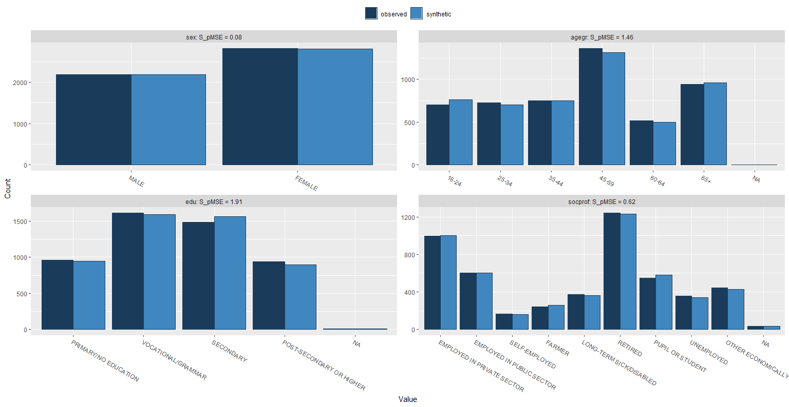
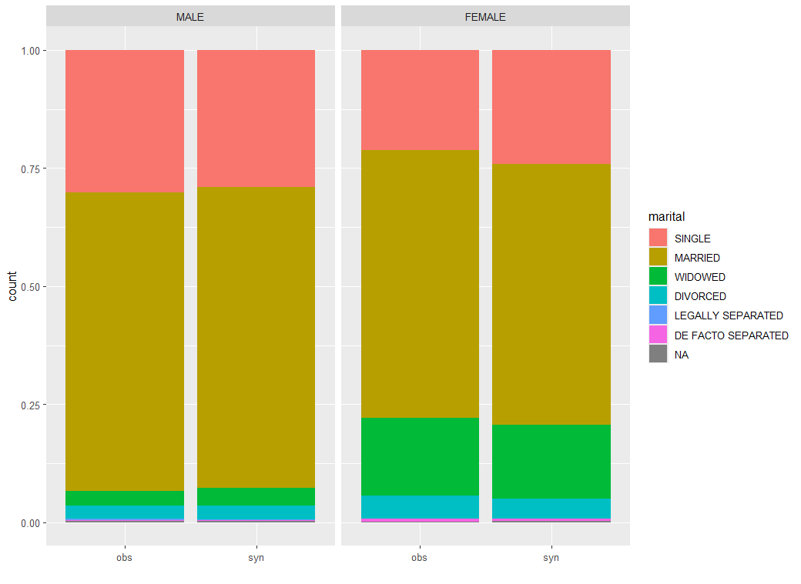
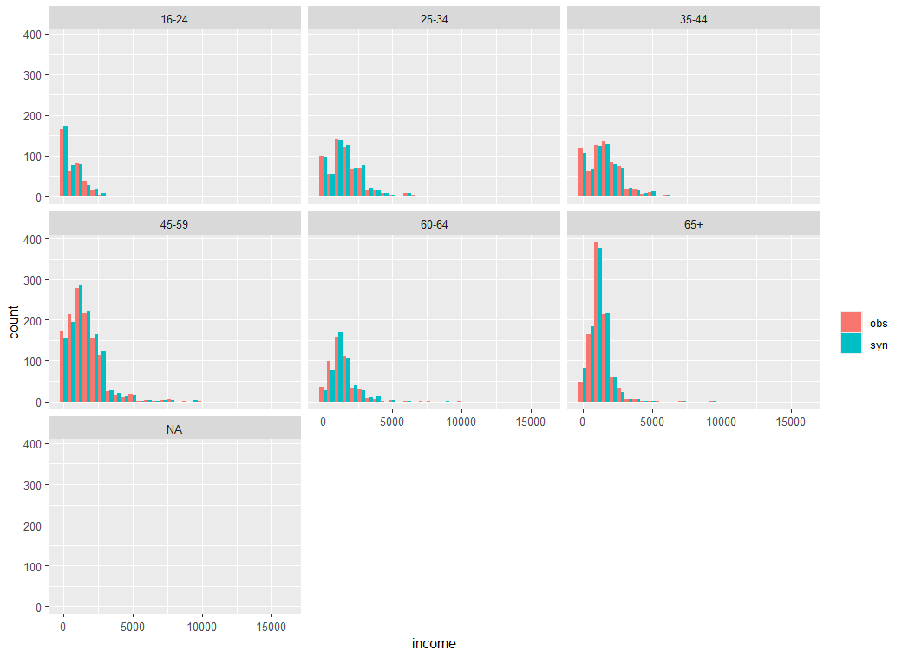
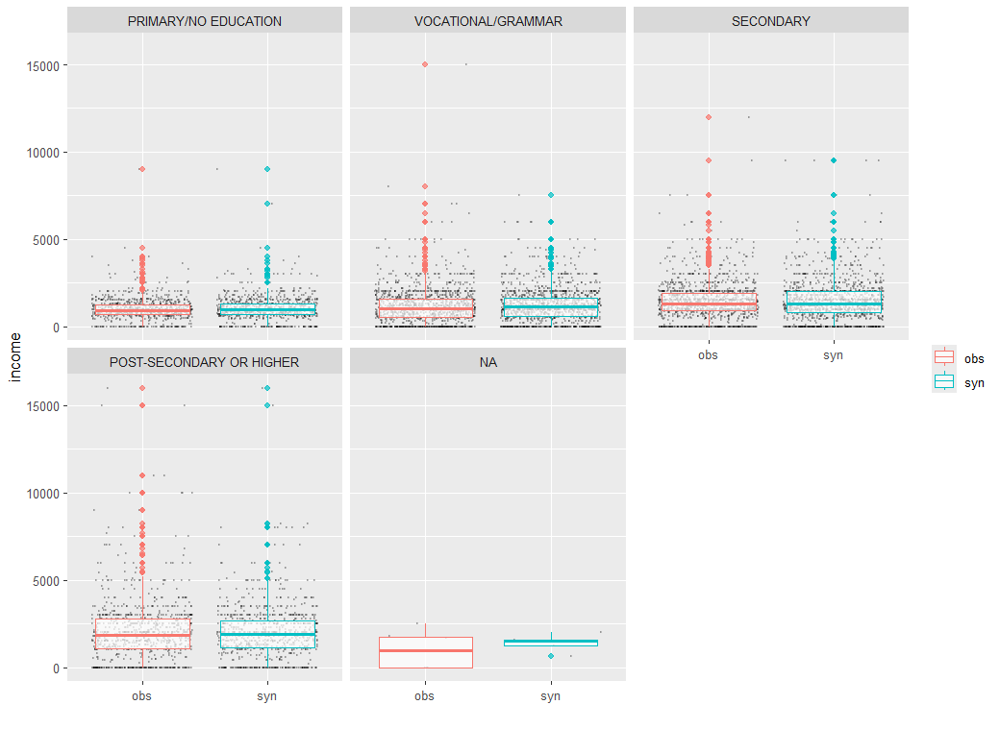

<!DOCTYPE html>


<html lang="en" data-content_root="" >

  <head>
    <meta charset="utf-8" />
    <meta name="viewport" content="width=device-width, initial-scale=1.0" /><meta name="generator" content="Docutils 0.18.1: http://docutils.sourceforge.net/" />

    <title>Synthpop: Synthetic Data in R &#8212; Spark at the ONS</title>
  
  
  
  <script data-cfasync="false">
    document.documentElement.dataset.mode = localStorage.getItem("mode") || "";
    document.documentElement.dataset.theme = localStorage.getItem("theme") || "light";
  </script>
  
  <!-- Loaded before other Sphinx assets -->
  <link href="../_static/styles/theme.css?digest=5b4479735964841361fd" rel="stylesheet" />
<link href="../_static/styles/bootstrap.css?digest=5b4479735964841361fd" rel="stylesheet" />
<link href="../_static/styles/pydata-sphinx-theme.css?digest=5b4479735964841361fd" rel="stylesheet" />

  
  <link href="../_static/vendor/fontawesome/6.1.2/css/all.min.css?digest=5b4479735964841361fd" rel="stylesheet" />
  <link rel="preload" as="font" type="font/woff2" crossorigin href="../_static/vendor/fontawesome/6.1.2/webfonts/fa-solid-900.woff2" />
<link rel="preload" as="font" type="font/woff2" crossorigin href="../_static/vendor/fontawesome/6.1.2/webfonts/fa-brands-400.woff2" />
<link rel="preload" as="font" type="font/woff2" crossorigin href="../_static/vendor/fontawesome/6.1.2/webfonts/fa-regular-400.woff2" />

    <link rel="stylesheet" type="text/css" href="../_static/pygments.css" />
    <link rel="stylesheet" href="../_static/styles/sphinx-book-theme.css?digest=14f4ca6b54d191a8c7657f6c759bf11a5fb86285" type="text/css" />
    <link rel="stylesheet" type="text/css" href="../_static/togglebutton.css" />
    <link rel="stylesheet" type="text/css" href="../_static/copybutton.css" />
    <link rel="stylesheet" type="text/css" href="../_static/mystnb.4510f1fc1dee50b3e5859aac5469c37c29e427902b24a333a5f9fcb2f0b3ac41.css" />
    <link rel="stylesheet" type="text/css" href="../_static/sphinx-thebe.css" />
    <link rel="stylesheet" type="text/css" href="../_static/accessibility.css" />
    <link rel="stylesheet" type="text/css" href="../_static/design-style.4045f2051d55cab465a707391d5b2007.min.css" />
    <link rel="stylesheet" type="text/css" href="../_static/tabs.css" />
  
  <!-- Pre-loaded scripts that we'll load fully later -->
  <link rel="preload" as="script" href="../_static/scripts/bootstrap.js?digest=5b4479735964841361fd" />
<link rel="preload" as="script" href="../_static/scripts/pydata-sphinx-theme.js?digest=5b4479735964841361fd" />
  <script src="../_static/vendor/fontawesome/6.1.2/js/all.min.js?digest=5b4479735964841361fd"></script>

    <script data-url_root="../" id="documentation_options" src="../_static/documentation_options.js"></script>
    <script src="../_static/jquery.js"></script>
    <script src="../_static/underscore.js"></script>
    <script src="../_static/_sphinx_javascript_frameworks_compat.js"></script>
    <script src="../_static/doctools.js"></script>
    <script src="../_static/clipboard.min.js"></script>
    <script src="../_static/copybutton.js"></script>
    <script src="../_static/scripts/sphinx-book-theme.js?digest=5a5c038af52cf7bc1a1ec88eea08e6366ee68824"></script>
    <script>let toggleHintShow = 'Click to show';</script>
    <script>let toggleHintHide = 'Click to hide';</script>
    <script>let toggleOpenOnPrint = 'true';</script>
    <script src="../_static/togglebutton.js"></script>
    <script>var togglebuttonSelector = '.toggle, .admonition.dropdown';</script>
    <script src="../_static/design-tabs.js"></script>
    <script async="async" src="https://www.googletagmanager.com/gtag/js?id=G-95MGHSRD0S"></script>
    <script>
                window.dataLayer = window.dataLayer || [];
                function gtag(){ dataLayer.push(arguments); }
                gtag('js', new Date());
                gtag('config', 'G-95MGHSRD0S');
            </script>
    <script>const THEBE_JS_URL = "https://unpkg.com/thebe@0.8.2/lib/index.js"
const thebe_selector = ".thebe,.cell"
const thebe_selector_input = "pre"
const thebe_selector_output = ".output, .cell_output"
</script>
    <script async="async" src="../_static/sphinx-thebe.js"></script>
    <script src="../_static/tabs.js"></script>
    <script>DOCUMENTATION_OPTIONS.pagename = 'ancillary-topics/synthpop_with_r';</script>
    <link rel="index" title="Index" href="../genindex.html" />
    <link rel="search" title="Search" href="../search.html" />
    <link rel="next" title="Synthetic Data Generation in Python: Faker and Mimesis" href="synthetic_data_python.html" />
    <link rel="prev" title="R UDFs" href="r-udfs.html" />
  <meta name="viewport" content="width=device-width, initial-scale=1"/>
  <meta name="docsearch:language" content="en"/>
  </head>
  
  
  <body data-bs-spy="scroll" data-bs-target=".bd-toc-nav" data-offset="180" data-bs-root-margin="0px 0px -60%" data-default-mode="">

  
  
  <a class="skip-link" href="#main-content">Skip to main content</a>
  
  <div id="pst-scroll-pixel-helper"></div>

  
  <button type="button" class="btn rounded-pill" id="pst-back-to-top">
    <i class="fa-solid fa-arrow-up"></i>
    Back to top
  </button>

  
  <input type="checkbox"
          class="sidebar-toggle"
          name="__primary"
          id="__primary"/>
  <label class="overlay overlay-primary" for="__primary"></label>
  
  <input type="checkbox"
          class="sidebar-toggle"
          name="__secondary"
          id="__secondary"/>
  <label class="overlay overlay-secondary" for="__secondary"></label>
  
  <div class="search-button__wrapper">
    <div class="search-button__overlay"></div>
    <div class="search-button__search-container">
<form class="bd-search d-flex align-items-center"
      action="../search.html"
      method="get">
  <i class="fa-solid fa-magnifying-glass"></i>
  <input type="search"
         class="form-control"
         name="q"
         id="search-input"
         placeholder="Search this book..."
         aria-label="Search this book..."
         autocomplete="off"
         autocorrect="off"
         autocapitalize="off"
         spellcheck="false"/>
  <span class="search-button__kbd-shortcut"><kbd class="kbd-shortcut__modifier">Ctrl</kbd>+<kbd>K</kbd></span>
</form></div>
  </div>
  
    <nav class="bd-header navbar navbar-expand-lg bd-navbar">
    </nav>
  
  <div class="bd-container">
    <div class="bd-container__inner bd-page-width">
      
      <div class="bd-sidebar-primary bd-sidebar">
        

  
  <div class="sidebar-header-items sidebar-primary__section">
    
    
    
    
  </div>
  
    <div class="sidebar-primary-items__start sidebar-primary__section">
        <div class="sidebar-primary-item">

  

<a class="navbar-brand logo" href="../intro.html">
  
  
  
  
  
    
    
      
    
    
    
    <script>document.write(``);</script>
  
  
</a></div>
        <div class="sidebar-primary-item"><nav class="bd-links" id="bd-docs-nav" aria-label="Main">
    <div class="bd-toc-item navbar-nav active">
        
        <ul class="nav bd-sidenav bd-sidenav__home-link">
            <li class="toctree-l1">
                <a class="reference internal" href="../intro.html">
                    Introduction
                </a>
            </li>
        </ul>
        <p aria-level="2" class="caption" role="heading"><span class="caption-text">Spark overview</span></p>
<ul class="nav bd-sidenav">
<li class="toctree-l1"><a class="reference internal" href="../spark-overview/spark-start.html">Getting Started with Spark</a></li>
<li class="toctree-l1"><a class="reference internal" href="../spark-overview/when-to-use-spark.html">When To Use Spark</a></li>
<li class="toctree-l1"><a class="reference internal" href="../spark-overview/spark-session-guidance.html">Guidance on Spark Sessions</a></li>
<li class="toctree-l1"><a class="reference internal" href="../spark-overview/example-spark-sessions.html">Example Spark Sessions</a></li>
<li class="toctree-l1"><a class="reference internal" href="../spark-overview/spark-defaults.html">Configuration Hierarchy and <code class="docutils literal notranslate"><span class="pre">spark-defaults.conf</span></code></a></li>
<li class="toctree-l1"><a class="reference internal" href="../spark-overview/data-types.html">Data Types in Spark</a></li>
<li class="toctree-l1"><a class="reference internal" href="../spark-overview/creating-dataframes.html">Creating DataFrames Manually</a></li>
<li class="toctree-l1"><a class="reference internal" href="../spark-overview/reading-and-writing-data-spark.html">Reading and Writing Data in Spark</a></li>
<li class="toctree-l1"><a class="reference internal" href="../spark-overview/data-storage.html">Data Storage</a></li>
</ul>
<p aria-level="2" class="caption" role="heading"><span class="caption-text">Introduction to PySpark</span></p>
<ul class="nav bd-sidenav">
<li class="toctree-l1"><a class="reference internal" href="../pyspark-intro/pyspark-intro.html">Introduction to PySpark</a></li>
<li class="toctree-l1"><a class="reference internal" href="../pyspark-intro/returning-data.html">Returning Data from Cluster to Driver</a></li>
<li class="toctree-l1"><a class="reference internal" href="../pyspark-intro/f-col.html">Reference columns by name: <code class="docutils literal notranslate"><span class="pre">F.col()</span></code></a></li>
</ul>
<p aria-level="2" class="caption" role="heading"><span class="caption-text">Introduction to sparklyr</span></p>
<ul class="nav bd-sidenav">
<li class="toctree-l1"><a class="reference internal" href="../sparklyr-intro/sparklyr-intro.html">Introduction to sparklyr</a></li>
<li class="toctree-l1"><a class="reference internal" href="../sparklyr-intro/sparklyr-functions.html">Using Spark functions in sparklyr</a></li>

</ul>
<p aria-level="2" class="caption" role="heading"><span class="caption-text">Spark functions</span></p>
<ul class="nav bd-sidenav">
<li class="toctree-l1"><a class="reference internal" href="../spark-functions/union-dataframes-with-different-columns.html">Union two DataFrames with different columns</a></li>
<li class="toctree-l1"><a class="reference internal" href="../spark-functions/padding.html">Add leading zeros with <code class="docutils literal notranslate"><span class="pre">lpad()</span></code></a></li>

<li class="toctree-l1"><a class="reference internal" href="../spark-functions/sampling.html">Sampling: an overview</a></li>
<li class="toctree-l1"><a class="reference internal" href="../spark-functions/pivot-tables.html">Pivot tables in Spark</a></li>
<li class="toctree-l1"><a class="reference internal" href="../spark-functions/rounding.html">Rounding differences in Python, R and Spark</a></li>
<li class="toctree-l1"><a class="reference internal" href="../spark-functions/window-functions.html">Window Functions in Spark</a></li>
<li class="toctree-l1"><a class="reference internal" href="../spark-functions/cross-joins.html">Cross Joins</a></li>
<li class="toctree-l1"><a class="reference internal" href="../spark-functions/arrays.html">Arrays Functions in PySpark</a></li>
<li class="toctree-l1"><a class="reference internal" href="../spark-functions/date-functions.html">Date functions</a></li>
<li class="toctree-l1"><a class="reference internal" href="../spark-functions/writing-data.html">Writing Data</a></li>
<li class="toctree-l1"><a class="reference internal" href="../spark-functions/job-description-notebook.html">Set Spark Job Description</a></li>


<li class="toctree-l1"><a class="reference internal" href="../spark-functions/median.html">Median in Spark</a></li>
</ul>
<p aria-level="2" class="caption" role="heading"><span class="caption-text">Understanding and Optimising Spark</span></p>
<ul class="nav bd-sidenav">
<li class="toctree-l1"><a class="reference internal" href="../spark-concepts/optimisation-tips.html">Ideas for optimising Spark code</a></li>
<li class="toctree-l1"><a class="reference internal" href="../spark-concepts/spark-application-and-ui.html">Spark Application and UI</a></li>
<li class="toctree-l1"><a class="reference internal" href="../spark-concepts/groups-not-loops.html">Groups not Loops</a></li>
<li class="toctree-l1"><a class="reference internal" href="../spark-concepts/shuffling.html">Shuffling</a></li>
<li class="toctree-l1"><a class="reference internal" href="../spark-concepts/join-concepts.html">Optimising Joins</a></li>
<li class="toctree-l1"><a class="reference internal" href="../spark-concepts/salted-joins.html">Salted Joins</a></li>
<li class="toctree-l1"><a class="reference internal" href="../spark-concepts/partitions.html">Managing Partitions</a></li>
<li class="toctree-l1"><a class="reference internal" href="../spark-concepts/persistence.html">Persisting in Spark</a></li>
<li class="toctree-l1"><a class="reference internal" href="../spark-concepts/cache.html">Caching</a></li>
<li class="toctree-l1"><a class="reference internal" href="../spark-concepts/checkpoint-staging.html">Checkpoints and Staging Tables</a></li>
<li class="toctree-l1"><a class="reference internal" href="../spark-concepts/garbage-collection.html">Garbage Collection</a></li>
<li class="toctree-l1"><a class="reference internal" href="../spark-concepts/df-order.html">Spark DataFrames Are Not Ordered</a></li>
<li class="toctree-l1"><a class="reference internal" href="../spark-concepts/exercises.html">Exercises</a></li>
</ul>
<p aria-level="2" class="caption" role="heading"><span class="caption-text">Analysis in Spark</span></p>
<ul class="nav bd-sidenav">
<li class="toctree-l1"><a class="reference internal" href="../spark-analysis/big-data-workflow.html">Big data workflow</a></li>
<li class="toctree-l1"><a class="reference internal" href="../spark-analysis/interpolation.html">Interpolation in Spark</a></li>
<li class="toctree-l1"><a class="reference internal" href="../spark-analysis/logistic-regression.html">Logistic Regression</a></li>
<li class="toctree-l1"><a class="reference internal" href="../spark-analysis/visualisation.html">Spark and Visualisation</a></li>
<li class="toctree-l1"><a class="reference internal" href="../spark-analysis/flags.html">Flags in Spark</a></li>
<li class="toctree-l1"><a class="reference internal" href="../spark-analysis/bin-continuous-variable.html">Data binning</a></li>
<li class="toctree-l1"><a class="reference internal" href="../spark-analysis/cramer_v.html">Calculating Cramér’s V from a Spark DataFrame</a></li>
</ul>
<p aria-level="2" class="caption" role="heading"><span class="caption-text">Testing and Debugging</span></p>
<ul class="nav bd-sidenav">
<li class="toctree-l1"><a class="reference internal" href="../testing-debugging/spark-errors.html">Understanding and Handling Spark Errors</a></li>
<li class="toctree-l1"><a class="reference internal" href="../testing-debugging/unit-testing.html">Unit Testing in Spark</a></li>
</ul>
<p aria-level="2" class="caption" role="heading"><span class="caption-text">Ancillary Topics</span></p>
<ul class="current nav bd-sidenav">
<li class="toctree-l1"><a class="reference internal" href="module-imports.html">Naming Conflicts in Module Imports</a></li>
<li class="toctree-l1"><a class="reference internal" href="pydoop.html">Pydoop: HDFS to pandas</a></li>
<li class="toctree-l1"><a class="reference internal" href="creating-a-SQL-view-in-HDFS.html">Creating a SQL view in HDFS</a></li>
<li class="toctree-l1"><a class="reference internal" href="pandas-udfs.html">Pandas UDFs</a></li>
<li class="toctree-l1"><a class="reference internal" href="r-udfs.html">R UDFs</a></li>
<li class="toctree-l1 current active"><a class="current reference internal" href="#">Synthpop: Synthetic Data in R</a></li>
<li class="toctree-l1"><a class="reference internal" href="synthetic_data_python.html">Synthetic Data Generation in Python: Faker and Mimesis</a></li>
</ul>

        </div>
    </nav></div>
            <div class="bd-sidebar__bottom">
                <!-- To handle the deprecated key -->
                
                <div class="navbar_extra_footer">
                <div>
        <p>Book version 2022.6</p>
    </div>
    
                </div>
                
            </div>
        </div>
        <div id="rtd-footer-container"></div>
    </div>
      
      <main id="main-content" class="bd-main">
        
        

<div class="sbt-scroll-pixel-helper"></div>

          <div class="bd-content">
            <div class="bd-article-container">
              
              <div class="bd-header-article">
<div class="header-article-items header-article__inner">
  
    <div class="header-article-items__start">
      
        <div class="header-article-item"><label class="sidebar-toggle primary-toggle btn btn-sm" for="__primary" title="Toggle primary sidebar" data-bs-placement="bottom" data-bs-toggle="tooltip">
  <span class="fa-solid fa-bars"></span>
</label></div>
      
    </div>
  
  
    <div class="header-article-items__end">
      
        <div class="header-article-item">

<div class="article-header-buttons">


<div class="dropdown dropdown-source-buttons">
  <button class="btn dropdown-toggle" type="button" data-bs-toggle="dropdown" aria-expanded="false" aria-label="Source repositories">
    <i class="fab fa-github"></i>
  </button>
  <ul class="dropdown-menu">
      
      
      
      <li><a href="https://github.com/best-practice-and-impact/ons-spark" target="_blank"
   class="btn btn-sm btn-source-repository-button dropdown-item"
   title="Source repository"
   data-bs-placement="left" data-bs-toggle="tooltip"
>
  

<span class="btn__icon-container">
  <i class="fab fa-github"></i>
  </span>
<span class="btn__text-container">Repository</span>
</a>
</li>
      
      
      
      
      <li><a href="https://github.com/best-practice-and-impact/ons-spark/issues/new?title=Issue%20on%20page%20%2Fancillary-topics/synthpop_with_r.html&body=Your%20issue%20content%20here." target="_blank"
   class="btn btn-sm btn-source-issues-button dropdown-item"
   title="Open an issue"
   data-bs-placement="left" data-bs-toggle="tooltip"
>
  

<span class="btn__icon-container">
  <i class="fas fa-lightbulb"></i>
  </span>
<span class="btn__text-container">Open issue</span>
</a>
</li>
      
  </ul>
</div>


<div class="dropdown dropdown-download-buttons">
  <button class="btn dropdown-toggle" type="button" data-bs-toggle="dropdown" aria-expanded="false" aria-label="Download this page">
    <i class="fas fa-download"></i>
  </button>
  <ul class="dropdown-menu">
      
      
      
      <li><a href="../_sources/ancillary-topics/synthpop_with_r.md" target="_blank"
   class="btn btn-sm btn-download-source-button dropdown-item"
   title="Download source file"
   data-bs-placement="left" data-bs-toggle="tooltip"
>
  

<span class="btn__icon-container">
  <i class="fas fa-file"></i>
  </span>
<span class="btn__text-container">.md</span>
</a>
</li>
      
      
      
      
      <li>
<button onclick="window.print()"
  class="btn btn-sm btn-download-pdf-button dropdown-item"
  title="Print to PDF"
  data-bs-placement="left" data-bs-toggle="tooltip"
>
  

<span class="btn__icon-container">
  <i class="fas fa-file-pdf"></i>
  </span>
<span class="btn__text-container">.pdf</span>
</button>
</li>
      
  </ul>
</div>


<button onclick="toggleFullScreen()"
  class="btn btn-sm btn-fullscreen-button"
  title="Fullscreen mode"
  data-bs-placement="bottom" data-bs-toggle="tooltip"
>
  

<span class="btn__icon-container">
  <i class="fas fa-expand"></i>
  </span>

</button>


<script>
document.write(`
  <button class="btn btn-sm navbar-btn theme-switch-button" title="light/dark" aria-label="light/dark" data-bs-placement="bottom" data-bs-toggle="tooltip">
    <span class="theme-switch nav-link" data-mode="light"><i class="fa-solid fa-sun fa-lg"></i></span>
    <span class="theme-switch nav-link" data-mode="dark"><i class="fa-solid fa-moon fa-lg"></i></span>
    <span class="theme-switch nav-link" data-mode="auto"><i class="fa-solid fa-circle-half-stroke fa-lg"></i></span>
  </button>
`);
</script>


<script>
document.write(`
  <button class="btn btn-sm navbar-btn search-button search-button__button" title="Search" aria-label="Search" data-bs-placement="bottom" data-bs-toggle="tooltip">
    <i class="fa-solid fa-magnifying-glass fa-lg"></i>
  </button>
`);
</script>
<label class="sidebar-toggle secondary-toggle btn btn-sm" for="__secondary"title="Toggle secondary sidebar" data-bs-placement="bottom" data-bs-toggle="tooltip">
    <span class="fa-solid fa-list"></span>
</label>
</div></div>
      
    </div>
  
</div>
</div>
              
              

<div id="jb-print-docs-body" class="onlyprint">
    <h1>Synthpop: Synthetic Data in R</h1>
    <!-- Table of contents -->
    <div id="print-main-content">
        <div id="jb-print-toc">
            
            <div>
                <h2> Contents </h2>
            </div>
            <nav aria-label="Page">
                <ul class="visible nav section-nav flex-column">
<li class="toc-h2 nav-item toc-entry"><a class="reference internal nav-link" href="#introduction">1. Introduction</a></li>
<li class="toc-h2 nav-item toc-entry"><a class="reference internal nav-link" href="#generating-synthetic-data-in-r-from-scratch">2. Generating synthetic data in R from scratch</a><ul class="nav section-nav flex-column">
<li class="toc-h3 nav-item toc-entry"><a class="reference internal nav-link" href="#numerical-variables">2.1 Numerical variables</a></li>
<li class="toc-h3 nav-item toc-entry"><a class="reference internal nav-link" href="#character-factor-variables">2.2 Character/factor variables</a></li>
<li class="toc-h3 nav-item toc-entry"><a class="reference internal nav-link" href="#combining-data-into-a-synthetic-dataset">2.3 Combining data into a synthetic dataset</a></li>
</ul>
</li>
<li class="toc-h2 nav-item toc-entry"><a class="reference internal nav-link" href="#generating-synthetic-data-using-synthpop">3. Generating synthetic data using <code class="docutils literal notranslate"><span class="pre">synthpop</span></code></a><ul class="nav section-nav flex-column">
<li class="toc-h3 nav-item toc-entry"><a class="reference internal nav-link" href="#setting-up-synthpop-and-required-packages">3.1 Setting up <code class="docutils literal notranslate"><span class="pre">synthpop</span></code> and required packages</a></li>
</ul>
</li>
<li class="toc-h2 nav-item toc-entry"><a class="reference internal nav-link" href="#case-1-synthesise-synthpop-sample-data-sd2011">Case 1: Synthesise <code class="docutils literal notranslate"><span class="pre">synthpop</span></code> sample data <code class="docutils literal notranslate"><span class="pre">SD2011</span></code></a><ul class="nav section-nav flex-column">
<li class="toc-h3 nav-item toc-entry"><a class="reference internal nav-link" href="#step-by-step-guide">Step-by-step guide</a></li>
</ul>
</li>
<li class="toc-h2 nav-item toc-entry"><a class="reference internal nav-link" href="#using-synthpop-with-sparklyr-for-scalable-synthetic-data-processing">Using <code class="docutils literal notranslate"><span class="pre">synthpop</span></code> with <code class="docutils literal notranslate"><span class="pre">sparklyr</span></code> for scalable synthetic data processing</a></li>
<li class="toc-h2 nav-item toc-entry"><a class="reference internal nav-link" href="#case-2-synthesise-census-teaching-data">Case 2: Synthesise census teaching data</a><ul class="nav section-nav flex-column">
<li class="toc-h3 nav-item toc-entry"><a class="reference internal nav-link" href="#id4">Step-by-step guide</a></li>
<li class="toc-h3 nav-item toc-entry"><a class="reference internal nav-link" href="#relationships-between-multiple-variables">Relationships between multiple variables</a></li>
<li class="toc-h3 nav-item toc-entry"><a class="reference internal nav-link" href="#comparison-with-real-data">Comparison with real data</a></li>
</ul>
</li>
<li class="toc-h2 nav-item toc-entry"><a class="reference internal nav-link" href="#references">References</a></li>
<li class="toc-h2 nav-item toc-entry"><a class="reference internal nav-link" href="#acknowledgments">Acknowledgments</a></li>
</ul>
            </nav>
        </div>
    </div>
</div>

              
                
<div id="searchbox"></div>
                <article class="bd-article" role="main">
                  
  <section id="synthpop-synthetic-data-in-r">
<h1>Synthpop: Synthetic Data in R<a class="headerlink" href="#synthpop-synthetic-data-in-r" title="Permalink to this heading">#</a></h1>
<section id="introduction">
<h2>1. Introduction<a class="headerlink" href="#introduction" title="Permalink to this heading">#</a></h2>
<p>Synthetic data consists of artificially generated records that mimic the structure and statistical properties of real-world data, without containing any actual personal or sensitive information. It is widely used for:</p>
<ul class="simple">
<li><p>Testing and validating data pipelines and statistical models</p></li>
<li><p>Protecting privacy and confidentiality in data sharing</p></li>
<li><p>Simulating rare or edge-case scenarios</p></li>
<li><p>Teaching and training with realistic, non-disclosive datasets</p></li>
<li><p>Developing and prototyping systems in non-secure environments</p></li>
</ul>
<p><strong>Learning Objectives:</strong></p>
<p>By the end of this section, you will be able to:</p>
<ul class="simple">
<li><p>Understand the concept and importance of synthetic data</p></li>
<li><p>Recognise key use cases for synthetic data in official statistics and research</p></li>
<li><p>Learn two main approaches for generating synthetic data in R:</p>
<ol class="arabic simple">
<li><p>Writing your own code</p></li>
<li><p>Using the <code class="docutils literal notranslate"><span class="pre">synthpop</span></code> R package</p></li>
</ol>
</li>
</ul>
</section>
<section id="generating-synthetic-data-in-r-from-scratch">
<h2>2. Generating synthetic data in R from scratch<a class="headerlink" href="#generating-synthetic-data-in-r-from-scratch" title="Permalink to this heading">#</a></h2>
<div class="sphinx-tabs docutils container">
<div aria-label="Tabbed content" class="closeable" role="tablist"><button aria-controls="panel-0-Ug==" aria-selected="true" class="sphinx-tabs-tab code-tab group-tab" id="tab-0-Ug==" name="Ug==" role="tab" tabindex="0">R</button></div><div aria-labelledby="tab-0-Ug==" class="sphinx-tabs-panel code-tab group-tab" id="panel-0-Ug==" name="Ug==" role="tabpanel" tabindex="0"><div class="highlight-r notranslate"><div class="highlight"><pre><span></span><span class="c1"># Load the R packages</span>
<span class="nf">rm</span><span class="p">(</span><span class="n">list</span><span class="w"> </span><span class="o">=</span><span class="w"> </span><span class="nf">ls</span><span class="p">())</span><span class="w"> </span>
<span class="nf">library</span><span class="p">(</span><span class="n">dplyr</span><span class="p">)</span>
<span class="nf">library</span><span class="p">(</span><span class="n">readr</span><span class="p">)</span>
<span class="nf">library</span><span class="p">(</span><span class="n">janitor</span><span class="p">)</span>
<span class="nf">library</span><span class="p">(</span><span class="n">magrittr</span><span class="p">)</span>
</pre></div>
</div>
</div></div>
<section id="numerical-variables">
<h3>2.1 Numerical variables<a class="headerlink" href="#numerical-variables" title="Permalink to this heading">#</a></h3>
<p>In this section, we will generate synthetic numerical variables using different distributions in R. We will use the following distributions:</p>
<ol class="arabic simple">
<li><p>Uniform Distribution</p></li>
<li><p>Normal Distribution</p></li>
<li><p>Binomial Distribution</p></li>
<li><p>Poisson Distribution</p></li>
</ol>
<p>Below are the R codes to generate these variables.</p>
<p>Note that in the interest of reproducible results, we can use the  <a class="reference external" href="https://www.rdocumentation.org/packages/base/versions/3.6.2/topics/Random"><code class="docutils literal notranslate"><span class="pre">set.seed(n)</span></code></a> function.</p>
<div class="sphinx-tabs docutils container">
<div aria-label="Tabbed content" class="closeable" role="tablist"><button aria-controls="panel-1-Ug==" aria-selected="true" class="sphinx-tabs-tab code-tab group-tab" id="tab-1-Ug==" name="Ug==" role="tab" tabindex="0">R</button></div><div aria-labelledby="tab-1-Ug==" class="sphinx-tabs-panel code-tab group-tab" id="panel-1-Ug==" name="Ug==" role="tabpanel" tabindex="0"><div class="highlight-r notranslate"><div class="highlight"><pre><span></span><span class="nf">set.seed</span><span class="p">(</span><span class="m">12345</span><span class="p">)</span>
</pre></div>
</div>
</div></div>
<p><strong>1. Uniform Distribution</strong>: The uniform distribution generates data where each value within a specified range is equally likely. This is useful for for simulating random allocation of survey respondents to experiemental groups, where each group has an equal chance of selection.</p>
<p><a class="reference external" href="https://github.com/best-practice-and-impact/ons-spark/blob/synthetic-data-branch/ons-spark/raw-notebooks/synthetic-data/synthpop_with_r.ipynb"><code class="docutils literal notranslate"><span class="pre">runif()</span></code></a> generates data where each value within the specified range is equally likely. We can visualise this data using the following example:</p>
<div class="sphinx-tabs docutils container">
<div aria-label="Tabbed content" class="closeable" role="tablist"><button aria-controls="panel-2-Ug==" aria-selected="true" class="sphinx-tabs-tab code-tab group-tab" id="tab-2-Ug==" name="Ug==" role="tab" tabindex="0">R</button></div><div aria-labelledby="tab-2-Ug==" class="sphinx-tabs-panel code-tab group-tab" id="panel-2-Ug==" name="Ug==" role="tabpanel" tabindex="0"><div class="highlight-r notranslate"><div class="highlight"><pre><span></span><span class="n">uniform_dist</span><span class="w"> </span><span class="o">&lt;-</span><span class="w"> </span><span class="nf">runif</span><span class="p">(</span><span class="n">n</span><span class="w"> </span><span class="o">=</span><span class="w"> </span><span class="m">1000</span><span class="p">,</span><span class="w"> </span>
<span class="w">                      </span><span class="n">min</span><span class="w"> </span><span class="o">=</span><span class="w"> </span><span class="m">0</span><span class="p">,</span><span class="w">  </span>
<span class="w">                      </span><span class="n">max</span><span class="w"> </span><span class="o">=</span><span class="w"> </span><span class="m">1</span><span class="p">)</span>
<span class="nf">hist</span><span class="p">(</span><span class="n">uniform_dist</span><span class="p">,</span><span class="w"> </span><span class="n">main</span><span class="o">=</span><span class="s">&quot;Uniform Distribution Example&quot;</span><span class="p">,</span><span class="w"> </span><span class="n">xlab</span><span class="o">=</span><span class="s">&quot;Value&quot;</span><span class="p">)</span>
<span class="nf">summary</span><span class="p">(</span><span class="n">uniform_dist</span><span class="p">)</span>
</pre></div>
</div>
</div></div>
<div class="highlight-plaintext notranslate"><div class="highlight"><pre><span></span>    Min.  1st Qu.   Median     Mean  3rd Qu.     Max. 

0.001137 0.268837 0.521491 0.514048 0.756667 0.996996 

</pre></div>
</div>
<p><strong>2. Normal Distribution</strong>: The normal distribution, or Gaussian distribution, is useful for simulating data that clusters around a mean. This is common in many natural phenomena like modelling adult heights or test scores, which tend to cluster around a mean in population health or education statistics.</p>
<p><a class="reference external" href="https://www.rdocumentation.org/packages/stats/versions/3.6.2/topics/Normal"><code class="docutils literal notranslate"><span class="pre">rnorm()</span></code></a> generates data that clusters around a specified mean, with a given standard deviation. We explore the generated data using the <code class="docutils literal notranslate"><span class="pre">hist()</span></code> and <code class="docutils literal notranslate"><span class="pre">summary()</span></code> functions.</p>
<div class="sphinx-tabs docutils container">
<div aria-label="Tabbed content" class="closeable" role="tablist"><button aria-controls="panel-3-Ug==" aria-selected="true" class="sphinx-tabs-tab code-tab group-tab" id="tab-3-Ug==" name="Ug==" role="tab" tabindex="0">R</button></div><div aria-labelledby="tab-3-Ug==" class="sphinx-tabs-panel code-tab group-tab" id="panel-3-Ug==" name="Ug==" role="tabpanel" tabindex="0"><div class="highlight-r notranslate"><div class="highlight"><pre><span></span><span class="n">normal_dist</span><span class="w"> </span><span class="o">&lt;-</span><span class="w"> </span><span class="nf">rnorm</span><span class="p">(</span><span class="n">n</span><span class="w"> </span><span class="o">=</span><span class="w"> </span><span class="m">1000</span><span class="p">,</span>
<span class="w">                     </span><span class="n">mean</span><span class="w"> </span><span class="o">=</span><span class="w"> </span><span class="m">50</span><span class="p">,</span>
<span class="w">                     </span><span class="n">sd</span><span class="w"> </span><span class="o">=</span><span class="w"> </span><span class="m">4</span><span class="p">)</span>
<span class="nf">hist</span><span class="p">(</span><span class="n">normal_dist</span><span class="p">,</span><span class="w"> </span><span class="n">main</span><span class="o">=</span><span class="s">&quot;Normal Distribution Example&quot;</span><span class="p">,</span><span class="w"> </span><span class="n">xlab</span><span class="o">=</span><span class="s">&quot;Value&quot;</span><span class="p">)</span>
<span class="nf">summary</span><span class="p">(</span><span class="n">normal_dist</span><span class="p">)</span>
</pre></div>
</div>
</div></div>
<div class="highlight-plaintext notranslate"><div class="highlight"><pre><span></span>   Min. 1st Qu.  Median    Mean 3rd Qu.    Max. 

  36.66   47.27   49.92   49.93   52.73   63.32 

</pre></div>
</div>
<p><strong>3. Poisson Distribution</strong>: The Poisson distribution is used for count data, where you are counting the number of events in a fixed interval of time or space. Typical examples is simulating the number of visits to a government website per day or modelling the number of emergency service calls.</p>
<p><a class="reference external" href="https://www.rdocumentation.org/packages/stats/versions/3.6.2/topics/Poisson"><code class="docutils literal notranslate"><span class="pre">rpois()</span></code></a> generates count data, useful for modeling the number of events in a fixed interval.</p>
<div class="sphinx-tabs docutils container">
<div aria-label="Tabbed content" class="closeable" role="tablist"><button aria-controls="panel-4-Ug==" aria-selected="true" class="sphinx-tabs-tab code-tab group-tab" id="tab-4-Ug==" name="Ug==" role="tab" tabindex="0">R</button></div><div aria-labelledby="tab-4-Ug==" class="sphinx-tabs-panel code-tab group-tab" id="panel-4-Ug==" name="Ug==" role="tabpanel" tabindex="0"><div class="highlight-r notranslate"><div class="highlight"><pre><span></span><span class="n">poisson_dist</span><span class="w"> </span><span class="o">&lt;-</span><span class="w"> </span><span class="nf">rpois</span><span class="p">(</span><span class="n">n</span><span class="w"> </span><span class="o">=</span><span class="w"> </span><span class="m">1000</span><span class="p">,</span><span class="w">  </span>
<span class="w">                      </span><span class="n">lambda</span><span class="w"> </span><span class="o">=</span><span class="w"> </span><span class="m">4</span><span class="p">)</span><span class="w">  </span>

<span class="nf">hist</span><span class="p">(</span><span class="n">poisson_dist</span><span class="p">,</span><span class="w"> </span><span class="n">main</span><span class="o">=</span><span class="s">&quot;Poisson Distribution Example&quot;</span><span class="p">,</span><span class="w"> </span><span class="n">xlab</span><span class="o">=</span><span class="s">&quot;Number of Events&quot;</span><span class="p">)</span>
<span class="nf">summary</span><span class="p">(</span><span class="n">poisson_dist</span><span class="p">)</span>
</pre></div>
</div>
</div></div>
<div class="highlight-plaintext notranslate"><div class="highlight"><pre><span></span>   Min. 1st Qu.  Median    Mean 3rd Qu.    Max. 

  0.000   2.000   4.000   3.921   5.000  12.000 

</pre></div>
</div>
<p><strong>4. Binomial Distribution</strong>: The binomial distribution is useful for simulating the number of successes in a fixed number of trials, each with the same probability of success. This is suitable for estimating the number of individuals in a survey who respond “yes” to a yes/no question, such as employment status or vaccine uptake.</p>
<p><a class="reference external" href="https://www.rdocumentation.org/packages/stats/versions/3.6.2/topics/Binomial"><code class="docutils literal notranslate"><span class="pre">rbinom()</span></code></a> generates data representing the number of successes in a fixed number of trials, each with the same probability of success.</p>
<div class="sphinx-tabs docutils container">
<div aria-label="Tabbed content" class="closeable" role="tablist"><button aria-controls="panel-5-Ug==" aria-selected="true" class="sphinx-tabs-tab code-tab group-tab" id="tab-5-Ug==" name="Ug==" role="tab" tabindex="0">R</button></div><div aria-labelledby="tab-5-Ug==" class="sphinx-tabs-panel code-tab group-tab" id="panel-5-Ug==" name="Ug==" role="tabpanel" tabindex="0"><div class="highlight-r notranslate"><div class="highlight"><pre><span></span><span class="n">binomial_dist</span><span class="w"> </span><span class="o">&lt;-</span><span class="w"> </span><span class="nf">rbinom</span><span class="p">(</span><span class="n">n</span><span class="w"> </span><span class="o">=</span><span class="w"> </span><span class="m">1000</span><span class="p">,</span><span class="w">   </span>
<span class="w">                        </span><span class="n">size</span><span class="w"> </span><span class="o">=</span><span class="w"> </span><span class="m">20</span><span class="p">,</span><span class="w">  </span>
<span class="w">                        </span><span class="n">prob</span><span class="w"> </span><span class="o">=</span><span class="w"> </span><span class="m">0.2</span><span class="p">)</span><span class="w">  </span>

<span class="nf">hist</span><span class="p">(</span><span class="n">binomial_dist</span><span class="p">,</span><span class="w"> </span><span class="n">main</span><span class="o">=</span><span class="s">&quot;Binomial Distribution Example&quot;</span><span class="p">,</span><span class="w"> </span><span class="n">xlab</span><span class="o">=</span><span class="s">&quot;Number of Successes&quot;</span><span class="p">)</span>
<span class="nf">summary</span><span class="p">(</span><span class="n">binomial_dist</span><span class="p">)</span>
</pre></div>
</div>
</div></div>
<div class="highlight-plaintext notranslate"><div class="highlight"><pre><span></span>   Min. 1st Qu.  Median    Mean 3rd Qu.    Max. 

  0.000   3.000   4.000   3.939   5.000  10.000 

</pre></div>
</div>
</section>
<section id="character-factor-variables">
<h3>2.2 Character/factor variables<a class="headerlink" href="#character-factor-variables" title="Permalink to this heading">#</a></h3>
<p>In this section, we will generate synthetic <code class="docutils literal notranslate"><span class="pre">character</span> <span class="pre">(factor)</span></code> variables using random sampling in R. These variables are useful for simulating categorical data, such as demographic information.</p>
<p><strong>1. Random sampling from a vector</strong>: Random sampling from a vector allows you to generate categorical data by randomly selecting elements from a specified set. This is useful for creating variables like gender, where each observation is randomly assigned a category.</p>
<div class="sphinx-tabs docutils container">
<div aria-label="Tabbed content" class="closeable" role="tablist"><button aria-controls="panel-6-Ug==" aria-selected="true" class="sphinx-tabs-tab code-tab group-tab" id="tab-6-Ug==" name="Ug==" role="tab" tabindex="0">R</button></div><div aria-labelledby="tab-6-Ug==" class="sphinx-tabs-panel code-tab group-tab" id="panel-6-Ug==" name="Ug==" role="tabpanel" tabindex="0"><div class="highlight-r notranslate"><div class="highlight"><pre><span></span><span class="n">gender</span><span class="w"> </span><span class="o">&lt;-</span><span class="w"> </span><span class="nf">sample</span><span class="p">(</span><span class="n">x</span><span class="w"> </span><span class="o">=</span><span class="w"> </span><span class="nf">c</span><span class="p">(</span><span class="s">&quot;M&quot;</span><span class="p">,</span><span class="w"> </span><span class="s">&quot;F&quot;</span><span class="p">),</span><span class="w">  </span>
<span class="w">              </span><span class="n">size</span><span class="w"> </span><span class="o">=</span><span class="w"> </span><span class="m">1000</span><span class="p">,</span><span class="w">      </span>
<span class="w">              </span><span class="n">replace</span><span class="w"> </span><span class="o">=</span><span class="w"> </span><span class="kc">TRUE</span><span class="p">)</span><span class="w">   </span>

<span class="nf">table</span><span class="p">(</span><span class="n">gender</span><span class="p">)</span>
<span class="nf">prop.table</span><span class="p">(</span><span class="nf">table</span><span class="p">(</span><span class="n">gender</span><span class="p">))</span>
</pre></div>
</div>
</div></div>
<div class="highlight-plaintext notranslate"><div class="highlight"><pre><span></span>gender

  F   M 

502 498 

gender

    F     M 

0.502 0.498 

</pre></div>
</div>
<p><strong>2. Weighted sampling from a vector</strong>: Weighted sampling allows you to generate categorical data with specified probabilities for each category. This is useful for creating variables like marital status, where each category has a different likelihood of being selected.</p>
<div class="sphinx-tabs docutils container">
<div aria-label="Tabbed content" class="closeable" role="tablist"><button aria-controls="panel-7-Ug==" aria-selected="true" class="sphinx-tabs-tab code-tab group-tab" id="tab-7-Ug==" name="Ug==" role="tab" tabindex="0">R</button></div><div aria-labelledby="tab-7-Ug==" class="sphinx-tabs-panel code-tab group-tab" id="panel-7-Ug==" name="Ug==" role="tabpanel" tabindex="0"><div class="highlight-r notranslate"><div class="highlight"><pre><span></span><span class="n">marriage_status</span><span class="w"> </span><span class="o">&lt;-</span><span class="w"> </span><span class="nf">sample</span><span class="p">(</span><span class="n">x</span><span class="w"> </span><span class="o">=</span><span class="w"> </span><span class="nf">c</span><span class="p">(</span><span class="s">&quot;Single&quot;</span><span class="p">,</span><span class="w"> </span><span class="s">&quot;Married&quot;</span><span class="p">,</span><span class="w"> </span><span class="s">&quot;Divorced&quot;</span><span class="p">,</span><span class="w"> </span><span class="s">&quot;Widowed&quot;</span><span class="p">),</span><span class="w">  </span>
<span class="w">                          </span><span class="n">size</span><span class="w"> </span><span class="o">=</span><span class="w"> </span><span class="m">1000</span><span class="p">,</span><span class="w">    </span>
<span class="w">                          </span><span class="n">replace</span><span class="w"> </span><span class="o">=</span><span class="w"> </span><span class="kc">TRUE</span><span class="p">,</span>
<span class="w">                          </span><span class="n">prob</span><span class="w"> </span><span class="o">=</span><span class="w"> </span><span class="nf">c</span><span class="p">(</span><span class="m">0.35</span><span class="p">,</span><span class="w"> </span><span class="m">0.50</span><span class="p">,</span><span class="w"> </span><span class="m">0.10</span><span class="p">,</span><span class="w"> </span><span class="m">0.05</span><span class="p">))</span>

<span class="nf">table</span><span class="p">(</span><span class="n">marriage_status</span><span class="p">)</span>
<span class="nf">prop.table</span><span class="p">(</span><span class="nf">table</span><span class="p">(</span><span class="n">marriage_status</span><span class="p">))</span>
</pre></div>
</div>
</div></div>
<div class="highlight-plaintext notranslate"><div class="highlight"><pre><span></span>marriage_status

Divorced  Married   Single  Widowed 

     105      518      329       48 

marriage_status

Divorced  Married   Single  Widowed 

   0.105    0.518    0.329    0.048 

</pre></div>
</div>
<p>Here is the explanation of the code snippet above:</p>
<ol class="arabic simple">
<li><p>Setting a Seed (<code class="docutils literal notranslate"><span class="pre">set.seed</span></code>):</p></li>
</ol>
<ul class="simple">
<li><p><code class="docutils literal notranslate"><span class="pre">set.seed(12345)</span></code>: Sets the seed for random number generation. The number <code class="docutils literal notranslate"><span class="pre">12345</span></code> can be any integer. Using the same seed will produce the same sequence of random numbers each time the code is run.</p></li>
</ul>
<ol class="arabic simple" start="2">
<li><p>Random Sampling (<code class="docutils literal notranslate"><span class="pre">sample</span></code>):</p></li>
</ol>
<ul class="simple">
<li><p><code class="docutils literal notranslate"><span class="pre">x</span></code>: The vector of elements to choose from.</p></li>
<li><p><code class="docutils literal notranslate"><span class="pre">size</span></code>: The number of observations to generate.</p></li>
<li><p><code class="docutils literal notranslate"><span class="pre">replace</span></code>: Whether sampling is with replacement (<code class="docutils literal notranslate"><span class="pre">TRUE</span></code>) or without replacement (<code class="docutils literal notranslate"><span class="pre">FALSE</span></code>).</p></li>
<li><p>Further reading can be found here: <a class="reference internal" href="../spark-functions/sampling.html"><span class="doc std std-doc">sampling</span></a>.</p></li>
</ul>
<ol class="arabic simple" start="3">
<li><p>Weighted Sampling (<code class="docutils literal notranslate"><span class="pre">sample</span></code> with <code class="docutils literal notranslate"><span class="pre">prob</span></code>):</p></li>
</ol>
<ul class="simple">
<li><p><code class="docutils literal notranslate"><span class="pre">prob</span></code>: A vector of probabilities corresponding to the likelihood of each element in <code class="docutils literal notranslate"><span class="pre">x</span></code> being selected. The probabilities must sum to <code class="docutils literal notranslate"><span class="pre">1</span></code>.</p></li>
<li><p>Further reading can be found here: <a class="reference internal" href="../spark-functions/sampling.html"><span class="doc std std-doc">sampling</span></a>.</p></li>
</ul>
</section>
<section id="combining-data-into-a-synthetic-dataset">
<h3>2.3 Combining data into a synthetic dataset<a class="headerlink" href="#combining-data-into-a-synthetic-dataset" title="Permalink to this heading">#</a></h3>
<p>Now, we will combine the numerical and categorical data into a single synthetic dataset using the <code class="docutils literal notranslate"><span class="pre">data.table</span></code> package:</p>
<div class="sphinx-tabs docutils container">
<div aria-label="Tabbed content" class="closeable" role="tablist"><button aria-controls="panel-8-Ug==" aria-selected="true" class="sphinx-tabs-tab code-tab group-tab" id="tab-8-Ug==" name="Ug==" role="tab" tabindex="0">R</button></div><div aria-labelledby="tab-8-Ug==" class="sphinx-tabs-panel code-tab group-tab" id="panel-8-Ug==" name="Ug==" role="tabpanel" tabindex="0"><div class="highlight-r notranslate"><div class="highlight"><pre><span></span><span class="nf">library</span><span class="p">(</span><span class="n">data.table</span><span class="p">)</span>

<span class="n">synthetic_data1</span><span class="w"> </span><span class="o">&lt;-</span><span class="w"> </span><span class="nf">data.table</span><span class="p">(</span><span class="n">uniform_dist</span><span class="p">,</span>
<span class="w">                              </span><span class="n">normal_dist</span><span class="p">,</span>
<span class="w">                              </span><span class="n">poisson_dist</span><span class="p">,</span>
<span class="w">                              </span><span class="n">binomial_dist</span><span class="p">,</span>
<span class="w">                              </span><span class="n">gender</span><span class="p">,</span>
<span class="w">                              </span><span class="n">marriage_status</span><span class="p">)</span>

<span class="nf">print</span><span class="p">(</span><span class="nf">head</span><span class="p">(</span><span class="n">synthetic_data1</span><span class="p">))</span>
<span class="nf">summary</span><span class="p">(</span><span class="n">synthetic_data1</span><span class="p">)</span>
<span class="nf">str</span><span class="p">(</span><span class="n">synthetic_data1</span><span class="p">)</span>
</pre></div>
</div>
</div></div>
<div class="highlight-plaintext notranslate"><div class="highlight"><pre><span></span>   uniform_dist normal_dist poisson_dist binomial_dist gender marriage_status

          &lt;num&gt;       &lt;num&gt;        &lt;int&gt;         &lt;int&gt; &lt;char&gt;          &lt;char&gt;

1:    0.7209039    44.31870            3             3      M          Single

2:    0.8757732    40.13225            6             4      M         Married

3:    0.7609823    51.93886            3             6      M         Married

4:    0.8861246    46.24811            5             3      F         Married

5:    0.4564810    63.32293            5             3      M         Married

6:    0.1663718    49.34822            5             6      F        Divorced

  uniform_dist       normal_dist     poisson_dist    binomial_dist   

 Min.   :0.001137   Min.   :36.66   Min.   : 0.000   Min.   : 0.000  

 1st Qu.:0.268837   1st Qu.:47.27   1st Qu.: 2.000   1st Qu.: 3.000  

 Median :0.521491   Median :49.92   Median : 4.000   Median : 4.000  

 Mean   :0.514048   Mean   :49.93   Mean   : 3.921   Mean   : 3.939  

 3rd Qu.:0.756667   3rd Qu.:52.73   3rd Qu.: 5.000   3rd Qu.: 5.000  

 Max.   :0.996996   Max.   :63.32   Max.   :12.000   Max.   :10.000  

    gender          marriage_status   

 Length:1000        Length:1000       

 Class :character   Class :character  

 Mode  :character   Mode  :character  

                                      

                                      

                                      

Classes &#39;data.table&#39; and &#39;data.frame&#39;:	1000 obs. of  6 variables:

 $ uniform_dist   : num  0.721 0.876 0.761 0.886 0.456 ...

 $ normal_dist    : num  44.3 40.1 51.9 46.2 63.3 ...

 $ poisson_dist   : int  3 6 3 5 5 5 7 2 2 6 ...

 $ binomial_dist  : int  3 4 6 3 3 6 6 4 7 6 ...

 $ gender         : chr  &quot;M&quot; &quot;M&quot; &quot;M&quot; &quot;F&quot; ...

 $ marriage_status: chr  &quot;Single&quot; &quot;Married&quot; &quot;Married&quot; &quot;Married&quot; ...

 - attr(*, &quot;.internal.selfref&quot;)=&lt;externalptr&gt; 

</pre></div>
</div>
<p><strong>Converting Character Variables to Factors</strong><br />
To ensure that the categorical variables are treated appropriately in analyses, we should convert them to factor variables:</p>
<div class="sphinx-tabs docutils container">
<div aria-label="Tabbed content" class="closeable" role="tablist"><button aria-controls="panel-9-Ug==" aria-selected="true" class="sphinx-tabs-tab code-tab group-tab" id="tab-9-Ug==" name="Ug==" role="tab" tabindex="0">R</button></div><div aria-labelledby="tab-9-Ug==" class="sphinx-tabs-panel code-tab group-tab" id="panel-9-Ug==" name="Ug==" role="tabpanel" tabindex="0"><div class="highlight-r notranslate"><div class="highlight"><pre><span></span><span class="c1"># Change gender and marriage_status to factor variables</span>
<span class="n">synthetic_data1</span><span class="o">$</span><span class="n">gender</span><span class="w"> </span><span class="o">&lt;-</span><span class="w"> </span><span class="nf">as.factor</span><span class="p">(</span><span class="n">synthetic_data1</span><span class="o">$</span><span class="n">gender</span><span class="p">)</span>
<span class="n">synthetic_data1</span><span class="o">$</span><span class="n">marriage_status</span><span class="w"> </span><span class="o">&lt;-</span><span class="w"> </span><span class="nf">as.factor</span><span class="p">(</span><span class="n">synthetic_data1</span><span class="o">$</span><span class="n">marriage_status</span><span class="p">)</span>

<span class="c1"># Check the structure of the dataset again</span>
<span class="nf">str</span><span class="p">(</span><span class="n">synthetic_data1</span><span class="p">)</span>
</pre></div>
</div>
</div></div>
<div class="highlight-plaintext notranslate"><div class="highlight"><pre><span></span>Classes &#39;data.table&#39; and &#39;data.frame&#39;:	1000 obs. of  6 variables:

 $ uniform_dist   : num  0.721 0.876 0.761 0.886 0.456 ...

 $ normal_dist    : num  44.3 40.1 51.9 46.2 63.3 ...

 $ poisson_dist   : int  3 6 3 5 5 5 7 2 2 6 ...

 $ binomial_dist  : int  3 4 6 3 3 6 6 4 7 6 ...

 $ gender         : Factor w/ 2 levels &quot;F&quot;,&quot;M&quot;: 2 2 2 1 2 1 2 2 2 1 ...

 $ marriage_status: Factor w/ 4 levels &quot;Divorced&quot;,&quot;Married&quot;,..: 3 2 2 2 2 1 2 4 1 2 ...

 - attr(*, &quot;.internal.selfref&quot;)=&lt;externalptr&gt; 

</pre></div>
</div>
<p>This combined synthetic dataset can now be used for various analyses, simulations, and testing purposes. It provides a comprehensive representation of both numerical and categorical variables, making it suitable for a wide range of applications.</p>
<p>These snippets provide a starting point for generating synthetic categorical data using random and weighted sampling with reproducibility. You can adjust the parameters to fit the specific characteristics of the population you are modeling. For more detailed information on the <code class="docutils literal notranslate"><span class="pre">sample</span></code> function, refer to the <a class="reference external" href="https://www.rdocumentation.org/packages/base/versions/3.6.2/topics/sample">R documentation</a>.</p>
</section>
</section>
<section id="generating-synthetic-data-using-synthpop">
<h2>3. Generating synthetic data using <code class="docutils literal notranslate"><span class="pre">synthpop</span></code><a class="headerlink" href="#generating-synthetic-data-using-synthpop" title="Permalink to this heading">#</a></h2>
<p>In the guidiance, we will work with the R package <code class="docutils literal notranslate"><span class="pre">synthpop</span></code> <a class="reference external" href="https://www.synthpop.org.uk/get-started.html">(Nowok, Raab, and Dibben 2016)</a>, which is one of the most advanced and dedicated packages in R to create synthetic data.</p>
<p>Synthpop generates synthetic data by modeling the relationships in the original dataset and then simulating new data that preserves the statistical properties of the original, while reducing disclosure risk.</p>
<section id="setting-up-synthpop-and-required-packages">
<h3>3.1 Setting up <code class="docutils literal notranslate"><span class="pre">synthpop</span></code> and required packages<a class="headerlink" href="#setting-up-synthpop-and-required-packages" title="Permalink to this heading">#</a></h3>
<div class="sphinx-tabs docutils container">
<div aria-label="Tabbed content" class="closeable" role="tablist"><button aria-controls="panel-10-Ug==" aria-selected="true" class="sphinx-tabs-tab code-tab group-tab" id="tab-10-Ug==" name="Ug==" role="tab" tabindex="0">R</button></div><div aria-labelledby="tab-10-Ug==" class="sphinx-tabs-panel code-tab group-tab" id="panel-10-Ug==" name="Ug==" role="tabpanel" tabindex="0"><div class="highlight-r notranslate"><div class="highlight"><pre><span></span><span class="nf">install.packages</span><span class="p">(</span><span class="s">&quot;synthpop&quot;</span><span class="p">)</span>
<span class="nf">install.packages</span><span class="p">(</span><span class="s">&quot;sparklyr&quot;</span><span class="p">)</span>
</pre></div>
</div>
</div></div>
<p>This will install <code class="docutils literal notranslate"><span class="pre">synthpop</span></code> and its dependencies and <code class="docutils literal notranslate"><span class="pre">sparklyr</span></code> from <a class="reference external" href="https://onsart-01/ui/login/">ONS Artifactory</a>.</p>
<p>First clear the workspace and load packages using the <code class="docutils literal notranslate"><span class="pre">library()</span></code> function.</p>
<div class="sphinx-tabs docutils container">
<div aria-label="Tabbed content" class="closeable" role="tablist"><button aria-controls="panel-11-Ug==" aria-selected="true" class="sphinx-tabs-tab code-tab group-tab" id="tab-11-Ug==" name="Ug==" role="tab" tabindex="0">R</button></div><div aria-labelledby="tab-11-Ug==" class="sphinx-tabs-panel code-tab group-tab" id="panel-11-Ug==" name="Ug==" role="tabpanel" tabindex="0"><div class="highlight-r notranslate"><div class="highlight"><pre><span></span><span class="nf">rm</span><span class="p">(</span><span class="n">list</span><span class="w"> </span><span class="o">=</span><span class="w"> </span><span class="nf">ls</span><span class="p">())</span>
<span class="nf">library</span><span class="p">(</span><span class="n">synthpop</span><span class="p">)</span>
</pre></div>
</div>
</div></div>
<p>To get a list of all <code class="docutils literal notranslate"><span class="pre">synthpop</span></code> functions, use:</p>
<div class="highlight-{r, notranslate"><div class="highlight"><pre><span></span>help(package = synthpop)
</pre></div>
</div>
<p>To quickly access a help file for a specific function, such as the main <code class="docutils literal notranslate"><span class="pre">synthpop</span></code> function <a class="reference external" href="https://www.rdocumentation.org/packages/synthpop/versions/1.8-0/topics/syn"><code class="docutils literal notranslate"><span class="pre">syn()</span></code></a>, you can type its name preceded by <code class="docutils literal notranslate"><span class="pre">?</span></code>.</p>
<div class="highlight-{r, notranslate"><div class="highlight"><pre><span></span>?synthpop
</pre></div>
</div>
<div class="highlight-{r, notranslate"><div class="highlight"><pre><span></span>?syn
</pre></div>
</div>
</section>
</section>
<section id="case-1-synthesise-synthpop-sample-data-sd2011">
<h2>Case 1: Synthesise <code class="docutils literal notranslate"><span class="pre">synthpop</span></code> sample data <code class="docutils literal notranslate"><span class="pre">SD2011</span></code><a class="headerlink" href="#case-1-synthesise-synthpop-sample-data-sd2011" title="Permalink to this heading">#</a></h2>
<p>In most cases, you will be working with your own data, but for practice, you can use the sample data <a class="reference external" href="https://www.rdocumentation.org/packages/synthpop/versions/1.8-0/topics/SD2011"><code class="docutils literal notranslate"><span class="pre">SD2011</span></code></a> provided with the <code class="docutils literal notranslate"><span class="pre">synthpop</span></code> package.</p>
<p><strong>Read the data</strong><br />
Read the data you want to synthesise into <code class="docutils literal notranslate"><span class="pre">R</span></code>. You can use the <code class="docutils literal notranslate"><span class="pre">synthpop</span></code> function <a class="reference external" href="https://www.rdocumentation.org/packages/synthpop/versions/1.9-0/topics/read.obs"><code class="docutils literal notranslate"><span class="pre">read.obs()</span></code></a> to read data from other formats.</p>
<p><strong>NOTE</strong>:  <code class="docutils literal notranslate"><span class="pre">synthpop</span></code> is an R package that generates synthetic data within R. While <code class="docutils literal notranslate"><span class="pre">synthpop</span></code> itself does not generate data directly in Spark, the synthetic datasets it produces can be easily transferred to Spark using <code class="docutils literal notranslate"><span class="pre">sparklyr</span></code> for scalable post-processing and analysis. Thus, Spark is used for processing and analysing the synthetic data, not for the initial data generation with <code class="docutils literal notranslate"><span class="pre">synthpop</span></code>.</p>
<p><strong>Examine your data</strong><br />
Start with a modest number of variables (8-12) to understand <code class="docutils literal notranslate"><span class="pre">synthpop</span></code>. If your data have more variables, make a selection. The package is intended for large datasets (at least <code class="docutils literal notranslate"><span class="pre">500</span></code> observations).</p>
<p>Use the <a class="reference external" href="https://www.rdocumentation.org/packages/synthpop/versions/1.8-0/topics/codebook.syn"><code class="docutils literal notranslate"><span class="pre">codebook.syn()</span></code></a> function to examine the features relevant to synthesising.</p>
<p>In this section, we will guide you through a sample synthesis using the <code class="docutils literal notranslate"><span class="pre">synthpop</span></code> package in R. This example uses the <a class="reference external" href="https://www.rdocumentation.org/packages/synthpop/versions/1.8-0/topics/SD2011"><code class="docutils literal notranslate"><span class="pre">SD2011</span></code> dataset</a> sample, provided with the <code class="docutils literal notranslate"><span class="pre">synthpop</span></code> package and <a class="reference external" href="https://www.synthpop.org.uk/assets/firstsynthesis.r">demonstrates how to generate synthetic data</a> with a smaller subset of variables. The SD2011 dataset is a social diagnosis survey from 2011, Poland</p>
<p>In this example, we will load the SD2011 dataset, select a subset of variables, generate a synthetic version using synthpop, and compare the synthetic data to the original.</p>
<section id="step-by-step-guide">
<h3>Step-by-step guide<a class="headerlink" href="#step-by-step-guide" title="Permalink to this heading">#</a></h3>
<ol class="arabic simple">
<li><p><strong>Explore the <code class="docutils literal notranslate"><span class="pre">SD2011</span></code> dataset</strong><br />
Here, we will use the <code class="docutils literal notranslate"><span class="pre">help()</span></code> method to obtain the information about the SD2011, <code class="docutils literal notranslate"><span class="pre">dim()</span></code> method to get the size of the dataframe and <code class="docutils literal notranslate"><span class="pre">codebook.syn()</span></code> method to obtain the summary information about variables.</p></li>
</ol>
<p>Note: SD2011 is included with the synthpop package. If you cannot find it, load it with data(SD2011). This example was tested in RStudio/VS Code/CDP with synthpop installed.</p>
<div class="highlight-{r, notranslate"><div class="highlight"><pre><span></span>help(SD2011) # this will give you information about it
</pre></div>
</div>
<div class="sphinx-tabs docutils container">
<div aria-label="Tabbed content" class="closeable" role="tablist"><button aria-controls="panel-12-Ug==" aria-selected="true" class="sphinx-tabs-tab code-tab group-tab" id="tab-12-Ug==" name="Ug==" role="tab" tabindex="0">R</button></div><div aria-labelledby="tab-12-Ug==" class="sphinx-tabs-panel code-tab group-tab" id="panel-12-Ug==" name="Ug==" role="tabpanel" tabindex="0"><div class="highlight-r notranslate"><div class="highlight"><pre><span></span><span class="c1"># This will give you the dimensions (rows, columns) of the SD2011 dataset</span>
<span class="nf">dim</span><span class="p">(</span><span class="n">SD2011</span><span class="p">)</span><span class="w">  </span><span class="c1"># Output: 5000 rows, 35 variables</span>
</pre></div>
</div>
</div></div>
<div class="highlight-plaintext notranslate"><div class="highlight"><pre><span></span>[1] 5000   35

</pre></div>
</div>
<div class="sphinx-tabs docutils container">
<div aria-label="Tabbed content" class="closeable" role="tablist"><button aria-controls="panel-13-Ug==" aria-selected="true" class="sphinx-tabs-tab code-tab group-tab" id="tab-13-Ug==" name="Ug==" role="tab" tabindex="0">R</button></div><div aria-labelledby="tab-13-Ug==" class="sphinx-tabs-panel code-tab group-tab" id="panel-13-Ug==" name="Ug==" role="tabpanel" tabindex="0"><div class="highlight-r notranslate"><div class="highlight"><pre><span></span><span class="c1"># Show summary information for a subset of variables; here we show only the first five variables for brevity.</span>
<span class="n">synthpop</span><span class="o">::</span><span class="nf">codebook.syn</span><span class="p">(</span><span class="n">SD2011</span><span class="p">[,</span><span class="w"> </span><span class="m">1</span><span class="o">:</span><span class="m">5</span><span class="p">])</span><span class="o">$</span><span class="n">tab</span>
</pre></div>
</div>
</div></div>
<div class="highlight-plaintext notranslate"><div class="highlight"><pre><span></span>   variable   class nmiss perctmiss ndistinct           details

1       sex  factor     0      0.00         2   &#39;MALE&#39; &#39;FEMALE&#39;

2       age numeric     0      0.00        79    Range: 16 - 97

3     agegr  factor     4      0.08         6 See table in labs

4 placesize  factor     0      0.00         6 See table in labs

5    region  factor     0      0.00        16 See table in labs

</pre></div>
</div>
<ol class="arabic simple" start="2">
<li><p><strong>Select a subset of variables</strong></p></li>
</ol>
<ul class="simple">
<li><p>After loading the data, inspect it to understand its structure and contents.</p></li>
<li><p>You can review a <code class="docutils literal notranslate"><span class="pre">summary()</span></code> of all variables to generate descriptive statistics.</p></li>
</ul>
<div class="sphinx-tabs docutils container">
<div aria-label="Tabbed content" class="closeable" role="tablist"><button aria-controls="panel-14-Ug==" aria-selected="true" class="sphinx-tabs-tab code-tab group-tab" id="tab-14-Ug==" name="Ug==" role="tab" tabindex="0">R</button></div><div aria-labelledby="tab-14-Ug==" class="sphinx-tabs-panel code-tab group-tab" id="panel-14-Ug==" name="Ug==" role="tabpanel" tabindex="0"><div class="highlight-r notranslate"><div class="highlight"><pre><span></span><span class="c1"># Select a smaller subset of variables for demonstration</span>
<span class="n">mydata</span><span class="w"> </span><span class="o">&lt;-</span><span class="w"> </span><span class="n">SD2011</span><span class="p">[,</span><span class="w"> </span><span class="nf">c</span><span class="p">(</span><span class="m">1</span><span class="p">,</span><span class="w"> </span><span class="m">2</span><span class="p">,</span><span class="w"> </span><span class="m">3</span><span class="p">,</span><span class="w"> </span><span class="m">6</span><span class="p">,</span><span class="w"> </span><span class="m">8</span><span class="p">,</span><span class="w"> </span><span class="m">10</span><span class="p">,</span><span class="w"> </span><span class="m">11</span><span class="p">)]</span>
<span class="c1"># Preview the first few rows of the dataset</span>
<span class="nf">head</span><span class="p">(</span><span class="n">mydata</span><span class="p">)</span>
<span class="c1"># Get a summary of the dataset</span>
<span class="nf">summary</span><span class="p">(</span><span class="n">mydata</span><span class="p">)</span>
</pre></div>
</div>
</div></div>
<div class="highlight-plaintext notranslate"><div class="highlight"><pre><span></span>     sex age agegr                  edu          socprof income marital

1 FEMALE  57 45-59   VOCATIONAL/GRAMMAR          RETIRED    800 MARRIED

2   MALE  20 16-24   VOCATIONAL/GRAMMAR PUPIL OR STUDENT    350  SINGLE

3 FEMALE  18 16-24   VOCATIONAL/GRAMMAR PUPIL OR STUDENT     NA  SINGLE

4 FEMALE  78   65+ PRIMARY/NO EDUCATION          RETIRED    900 WIDOWED

5 FEMALE  54 45-59   VOCATIONAL/GRAMMAR    SELF-EMPLOYED   1500 MARRIED

6   MALE  20 16-24            SECONDARY PUPIL OR STUDENT     -8  SINGLE

     sex            age          agegr                            edu      

 MALE  :2182   Min.   :16.00   16-24: 702   PRIMARY/NO EDUCATION    : 962  

 FEMALE:2818   1st Qu.:32.00   25-34: 726   VOCATIONAL/GRAMMAR      :1613  

               Median :49.00   35-44: 748   SECONDARY               :1482  

               Mean   :47.68   45-59:1361   POST-SECONDARY OR HIGHER: 936  

               3rd Qu.:61.00   60-64: 516   NA&#39;s                    :   7  

               Max.   :97.00   65+  : 943                                  

                               NA&#39;s :   4                                  

                        socprof         income                    marital    

 RETIRED                    :1241   Min.   :   -8   SINGLE            :1253  

 EMPLOYED IN PRIVATE SECTOR : 994   1st Qu.:  700   MARRIED           :2979  

 EMPLOYED IN PUBLIC SECTOR  : 600   Median : 1200   WIDOWED           : 531  

 PUPIL OR STUDENT           : 548   Mean   : 1411   DIVORCED          : 199  

 OTHER ECONOMICALLY INACTIVE: 444   3rd Qu.: 1800   LEGALLY SEPARATED :   7  

 (Other)                    :1140   Max.   :16000   DE FACTO SEPARATED:  22  

 NA&#39;s                       :  33   NA&#39;s   :683     NA&#39;s              :   9  

</pre></div>
</div>
<ol class="arabic simple" start="3">
<li><p><strong>Checking for missing values</strong>
The following code checks for negative and missing values in the income variable.</p></li>
</ol>
<div class="sphinx-tabs docutils container">
<div aria-label="Tabbed content" class="closeable" role="tablist"><button aria-controls="panel-15-Ug==" aria-selected="true" class="sphinx-tabs-tab code-tab group-tab" id="tab-15-Ug==" name="Ug==" role="tab" tabindex="0">R</button></div><div aria-labelledby="tab-15-Ug==" class="sphinx-tabs-panel code-tab group-tab" id="panel-15-Ug==" name="Ug==" role="tabpanel" tabindex="0"><div class="highlight-r notranslate"><div class="highlight"><pre><span></span><span class="c1"># Check for negative income values</span>
<span class="nf">table</span><span class="p">(</span><span class="n">mydata</span><span class="o">$</span><span class="n">income</span><span class="p">[</span><span class="n">mydata</span><span class="o">$</span><span class="n">income</span><span class="w"> </span><span class="o">&lt;</span><span class="w"> </span><span class="m">0</span><span class="p">],</span><span class="w"> </span><span class="n">useNA</span><span class="w"> </span><span class="o">=</span><span class="w"> </span><span class="s">&quot;ifany&quot;</span><span class="p">)</span>
</pre></div>
</div>
</div></div>
<div class="highlight-plaintext notranslate"><div class="highlight"><pre><span></span>

  -8 &lt;NA&gt; 

 603  683 

</pre></div>
</div>
<ol class="arabic simple" start="4">
<li><p><strong>Synthesise data</strong></p></li>
</ol>
<ul class="simple">
<li><p>Use the <code class="docutils literal notranslate"><span class="pre">syn()</span></code> function from the <code class="docutils literal notranslate"><span class="pre">synthpop</span></code> package to create a synthetic version of your data, using the default settings.</p></li>
<li><p>Fix the random seed before generating the synthetic data, so that you can compare your output with our output.</p></li>
</ul>
<div class="sphinx-tabs docutils container">
<div aria-label="Tabbed content" class="closeable" role="tablist"><button aria-controls="panel-16-Ug==" aria-selected="true" class="sphinx-tabs-tab code-tab group-tab" id="tab-16-Ug==" name="Ug==" role="tab" tabindex="0">R</button></div><div aria-labelledby="tab-16-Ug==" class="sphinx-tabs-panel code-tab group-tab" id="panel-16-Ug==" name="Ug==" role="tabpanel" tabindex="0"><div class="highlight-r notranslate"><div class="highlight"><pre><span></span><span class="nf">set.seed</span><span class="p">(</span><span class="m">123</span><span class="p">)</span>

<span class="c1"># Synthesise data, handling -8 as a missing value for income</span>
<span class="n">mysyn</span><span class="w"> </span><span class="o">&lt;-</span><span class="w"> </span><span class="n">synthpop</span><span class="o">::</span><span class="nf">syn</span><span class="p">(</span><span class="n">mydata</span><span class="p">,</span><span class="w"> </span><span class="n">cont.na</span><span class="w"> </span><span class="o">=</span><span class="w"> </span><span class="nf">list</span><span class="p">(</span><span class="n">income</span><span class="w"> </span><span class="o">=</span><span class="w"> </span><span class="m">-8</span><span class="p">))</span>
</pre></div>
</div>
</div></div>
<div class="highlight-plaintext notranslate"><div class="highlight"><pre><span></span>

Synthesis

-----------

 sex age agegr edu socprof income marital

</pre></div>
</div>
<p>We have now created the object <code class="docutils literal notranslate"><span class="pre">mysyn</span></code>, which is of class <code class="docutils literal notranslate"><span class="pre">synds</span></code> and contains several pieces of information related to the synthetic data. We will quickly go over the most important output. We can examine the synthesised data using the summary and head methods.</p>
<div class="sphinx-tabs docutils container">
<div aria-label="Tabbed content" class="closeable" role="tablist"><button aria-controls="panel-17-Ug==" aria-selected="true" class="sphinx-tabs-tab code-tab group-tab" id="tab-17-Ug==" name="Ug==" role="tab" tabindex="0">R</button></div><div aria-labelledby="tab-17-Ug==" class="sphinx-tabs-panel code-tab group-tab" id="panel-17-Ug==" name="Ug==" role="tabpanel" tabindex="0"><div class="highlight-r notranslate"><div class="highlight"><pre><span></span><span class="nf">summary</span><span class="p">(</span><span class="n">mysyn</span><span class="p">)</span>
</pre></div>
</div>
</div></div>
<div class="highlight-plaintext notranslate"><div class="highlight"><pre><span></span>Synthetic object with one synthesis using methods:

     sex      age    agegr      edu  socprof   income  marital 

&quot;sample&quot;   &quot;cart&quot;   &quot;cart&quot;   &quot;cart&quot;   &quot;cart&quot;   &quot;cart&quot;   &quot;cart&quot; 


     sex            age          agegr                            edu      

 MALE  :2188   Min.   :16.00   16-24: 685   PRIMARY/NO EDUCATION    : 958  

 FEMALE:2812   1st Qu.:32.00   25-34: 745   VOCATIONAL/GRAMMAR      :1612  

               Median :49.00   35-44: 757   SECONDARY               :1464  

               Mean   :47.62   45-59:1381   POST-SECONDARY OR HIGHER: 964  

               3rd Qu.:61.00   60-64: 500   NA&#39;s                    :   2  

               Max.   :97.00   65+  : 930                                  

                               NA&#39;s :   2                                  

                        socprof         income                    marital    

 RETIRED                    :1188   Min.   :   -8   SINGLE            :1254  

 EMPLOYED IN PRIVATE SECTOR :1004   1st Qu.:  700   MARRIED           :3022  

 EMPLOYED IN PUBLIC SECTOR  : 600   Median : 1200   WIDOWED           : 504  

 PUPIL OR STUDENT           : 528   Mean   : 1419   DIVORCED          : 183  

 OTHER ECONOMICALLY INACTIVE: 433   3rd Qu.: 1800   LEGALLY SEPARATED :  10  

 (Other)                    :1213   Max.   :15000   DE FACTO SEPARATED:  16  

 NA&#39;s                       :  34   NA&#39;s   :693     NA&#39;s              :  11  

</pre></div>
</div>
<div class="sphinx-tabs docutils container">
<div aria-label="Tabbed content" class="closeable" role="tablist"><button aria-controls="panel-18-Ug==" aria-selected="true" class="sphinx-tabs-tab code-tab group-tab" id="tab-18-Ug==" name="Ug==" role="tab" tabindex="0">R</button></div><div aria-labelledby="tab-18-Ug==" class="sphinx-tabs-panel code-tab group-tab" id="panel-18-Ug==" name="Ug==" role="tabpanel" tabindex="0"><div class="highlight-r notranslate"><div class="highlight"><pre><span></span><span class="nf">head</span><span class="p">(</span><span class="n">mysyn</span><span class="o">$</span><span class="n">syn</span><span class="p">)</span><span class="w"> </span>
</pre></div>
</div>
</div></div>
<div class="highlight-plaintext notranslate"><div class="highlight"><pre><span></span>     sex age agegr                      edu                     socprof income

1 FEMALE  48 45-59     PRIMARY/NO EDUCATION  EMPLOYED IN PRIVATE SECTOR   1000

2 FEMALE  57 45-59     PRIMARY/NO EDUCATION                  UNEMPLOYED     -8

3   MALE  68   65+     PRIMARY/NO EDUCATION                     RETIRED   1200

4   MALE  25 25-34                SECONDARY OTHER ECONOMICALLY INACTIVE     NA

5 FEMALE  64 60-64 POST-SECONDARY OR HIGHER                     RETIRED   1200

6   MALE  73   65+                SECONDARY                     RETIRED   1300

  marital

1 MARRIED

2 MARRIED

3 MARRIED

4  SINGLE

5 MARRIED

6 MARRIED

</pre></div>
</div>
<p>The <code class="docutils literal notranslate"><span class="pre">compare()</span></code> function below produces plots and statistics that help you assess how closely the synthetic data matches the original data for each variable:</p>
<ul class="simple">
<li><p>The bar plots show the distribution of counts for each value/category, with a legend distinguishing “Observed” (original data) and “Synthetic” (synthetic data).</p></li>
<li><p>If the bars for observed and synthetic data are similar in height for each value, this indicates that the synthetic data replicates the original distribution well.</p></li>
<li><p>The S_pMSE (Standardized Propensity Mean Squared Error) value, shown on each plot, quantifies the similarity between the observed and synthetic distributions.</p>
<ul>
<li><p><strong>A lower S_pMSE value (closer to 0)</strong> means the synthetic data closely matches the original data for that variable.</p></li>
<li><p><strong>A higher S_pMSE value (&gt;&gt; 1)</strong> means there are greater differences between the synthetic and original data.</p></li>
</ul>
</li>
</ul>
<p>In summary, look for S_pMSE values near 0 and similar bar heights to conclude that the synthetic data replicates the original data well for a given variable. You can also get the S_pMSE values from the <code class="docutils literal notranslate"><span class="pre">print(mysyn)</span></code> method</p>
<div class="sphinx-tabs docutils container">
<div aria-label="Tabbed content" class="closeable" role="tablist"><button aria-controls="panel-19-Ug==" aria-selected="true" class="sphinx-tabs-tab code-tab group-tab" id="tab-19-Ug==" name="Ug==" role="tab" tabindex="0">R</button></div><div aria-labelledby="tab-19-Ug==" class="sphinx-tabs-panel code-tab group-tab" id="panel-19-Ug==" name="Ug==" role="tabpanel" tabindex="0"><div class="highlight-r notranslate"><div class="highlight"><pre><span></span><span class="c1"># Compare the synthetic data with the original data. In most cases, you would need to press &quot;Press return for next variable(s)&quot;</span>
<span class="n">synthpop</span><span class="o">::</span><span class="nf">compare</span><span class="p">(</span><span class="n">mysyn</span><span class="p">,</span><span class="w"> </span><span class="n">mydata</span><span class="p">,</span><span class="w"> </span><span class="n">stat</span><span class="w"> </span><span class="o">=</span><span class="w"> </span><span class="s">&quot;counts&quot;</span><span class="p">)</span>
</pre></div>
</div>
</div></div>
<div class="highlight-plaintext notranslate"><div class="highlight"><pre><span></span>Calculations done for sex 

Calculations done for age 

Calculations done for agegr 

Calculations done for edu 

Calculations done for socprof 

Calculations done for income 

Calculations done for marital 


Comparing counts observed with synthetic


Press return for next variable(s): 


Selected utility measures:

            pMSE   S_pMSE df

sex     0.000000 0.029265  1

age     0.000028 0.554077  4

agegr   0.000042 0.554113  6

edu     0.000083 1.654516  4

socprof 0.000143 1.274998  9

income  0.000104 1.391121  6

marital 0.000084 1.119933  6

</pre></div>
</div>
<p>This figure shows examples of visuals from using the <code class="docutils literal notranslate"><span class="pre">multi.compare()</span></code> function:</p>
<figure class="align-default" id="multicomparediagram">
<a class="reference internal image-reference" href="../_images/Rplot_Observed_versus_synthetic_data.png"></a>
<figcaption>
<p><span class="caption-number">Fig. 46 </span><span class="caption-text">Observed_versus_synthetic_data</span><a class="headerlink" href="#multicomparediagram" title="Permalink to this image">#</a></p>
</figcaption>
</figure>
<ol class="arabic simple" start="5">
<li><p><strong>Export synthetic data</strong></p></li>
</ol>
<div class="sphinx-tabs docutils container">
<div aria-label="Tabbed content" class="closeable" role="tablist"><button aria-controls="panel-20-Ug==" aria-selected="true" class="sphinx-tabs-tab code-tab group-tab" id="tab-20-Ug==" name="Ug==" role="tab" tabindex="0">R</button></div><div aria-labelledby="tab-20-Ug==" class="sphinx-tabs-panel code-tab group-tab" id="panel-20-Ug==" name="Ug==" role="tabpanel" tabindex="0"><div class="highlight-r notranslate"><div class="highlight"><pre><span></span><span class="c1"># Export synthetic data to CSV format</span>
<span class="nf">write.syn</span><span class="p">(</span><span class="n">mysyn</span><span class="p">,</span><span class="w"> </span><span class="n">filename</span><span class="w"> </span><span class="o">=</span><span class="w"> </span><span class="s">&quot;mysyn_SD2011&quot;</span><span class="p">,</span><span class="w"> </span><span class="n">filetype</span><span class="w"> </span><span class="o">=</span><span class="w"> </span><span class="s">&quot;csv&quot;</span><span class="p">)</span>
</pre></div>
</div>
</div></div>
<div class="highlight-plaintext notranslate"><div class="highlight"><pre><span></span>Synthetic data exported as csv file(s).

Information on synthetic data written to

  D:/dapcats_guidance/ons-spark/synthesis_info_mysyn_SD2011.txt 

</pre></div>
</div>
<ol class="arabic simple" start="6">
<li><p><strong>Explore synthetic data</strong><br />
After generating synthetic data using the <code class="docutils literal notranslate"><span class="pre">synthpop</span></code> package, it is important to explore and understand the structure and components of the synthetic data object. This section provides guidance on how to explore the synthetic data object and perform additional comparisons.</p></li>
</ol>
<p><strong>I. Retrieve component names</strong></p>
<div class="sphinx-tabs docutils container">
<div aria-label="Tabbed content" class="closeable" role="tablist"><button aria-controls="panel-21-Ug==" aria-selected="true" class="sphinx-tabs-tab code-tab group-tab" id="tab-21-Ug==" name="Ug==" role="tab" tabindex="0">R</button></div><div aria-labelledby="tab-21-Ug==" class="sphinx-tabs-panel code-tab group-tab" id="panel-21-Ug==" name="Ug==" role="tabpanel" tabindex="0"><div class="highlight-r notranslate"><div class="highlight"><pre><span></span><span class="nf">names</span><span class="p">(</span><span class="n">mysyn</span><span class="p">)</span>
</pre></div>
</div>
</div></div>
<div class="highlight-plaintext notranslate"><div class="highlight"><pre><span></span> [1] &quot;call&quot;             &quot;m&quot;                &quot;syn&quot;              &quot;method&quot;          

 [5] &quot;visit.sequence&quot;   &quot;predictor.matrix&quot; &quot;smoothing&quot;        &quot;event&quot;           

 [9] &quot;denom&quot;            &quot;proper&quot;           &quot;n&quot;                &quot;k&quot;               

[13] &quot;rules&quot;            &quot;rvalues&quot;          &quot;cont.na&quot;          &quot;semicont&quot;        

[17] &quot;drop.not.used&quot;    &quot;drop.pred.only&quot;   &quot;models&quot;           &quot;seed&quot;            

[21] &quot;var.lab&quot;          &quot;val.lab&quot;          &quot;obs.vars&quot;         &quot;numtocat&quot;        

[25] &quot;catgroups&quot;       

</pre></div>
</div>
<ul class="simple">
<li><p>This command retrieves the names of the components within the <code class="docutils literal notranslate"><span class="pre">mysyn</span></code> object, helping you understand its structure.</p></li>
</ul>
<p><strong>II. Explanation of some of the components</strong></p>
<ol class="arabic simple">
<li><p><a class="reference external" href="https://www.synthpop.org.uk/assets/firstsynthesis.r"><code class="docutils literal notranslate"><span class="pre">syn</span></code></a>: The synthetic data set.</p></li>
<li><p><code class="docutils literal notranslate"><span class="pre">method</span></code>: The methods used for synthesising each variable.</p></li>
<li><p><code class="docutils literal notranslate"><span class="pre">predictor.matrix</span></code>: The matrix indicating which variables were used as predictors for each synthesised variable.</p></li>
<li><p><code class="docutils literal notranslate"><span class="pre">visit.sequence</span></code>: The order in which the variables were synthesised.</p></li>
<li><p><code class="docutils literal notranslate"><span class="pre">cont.na</span></code>: Information about how missing values were handled.</p></li>
<li><p><code class="docutils literal notranslate"><span class="pre">rules</span></code>: Any rules applied during synthesis.</p></li>
<li><p><code class="docutils literal notranslate"><span class="pre">rvalues</span></code>: Values used for rules.</p></li>
<li><p><code class="docutils literal notranslate"><span class="pre">m</span></code>: Number of synthetic datasets created (if multiple).</p></li>
<li><p><code class="docutils literal notranslate"><span class="pre">proper</span></code>: Indicates if proper synthesis was used.</p></li>
<li><p><code class="docutils literal notranslate"><span class="pre">seed</span></code>: The seed used for random number generation.</p></li>
<li><p><code class="docutils literal notranslate"><span class="pre">call</span></code>: The original call to the syn() function.</p></li>
<li><p><code class="docutils literal notranslate"><span class="pre">data</span></code>: The original data used for synthesis.</p></li>
</ol>
<p><strong>III. Inspect key components</strong></p>
<div class="sphinx-tabs docutils container">
<div aria-label="Tabbed content" class="closeable" role="tablist"><button aria-controls="panel-22-Ug==" aria-selected="true" class="sphinx-tabs-tab code-tab group-tab" id="tab-22-Ug==" name="Ug==" role="tab" tabindex="0">R</button></div><div aria-labelledby="tab-22-Ug==" class="sphinx-tabs-panel code-tab group-tab" id="panel-22-Ug==" name="Ug==" role="tabpanel" tabindex="0"><div class="highlight-r notranslate"><div class="highlight"><pre><span></span><span class="n">mysyn</span><span class="o">$</span><span class="n">method</span>
<span class="n">mysyn</span><span class="o">$</span><span class="n">predictor.matrix</span>
<span class="n">mysyn</span><span class="o">$</span><span class="n">visit.sequence</span>
<span class="n">mysyn</span><span class="o">$</span><span class="n">cont.na</span>
<span class="n">mysyn</span><span class="o">$</span><span class="n">seed</span>
</pre></div>
</div>
</div></div>
<div class="highlight-plaintext notranslate"><div class="highlight"><pre><span></span>     sex      age    agegr      edu  socprof   income  marital 

&quot;sample&quot;   &quot;cart&quot;   &quot;cart&quot;   &quot;cart&quot;   &quot;cart&quot;   &quot;cart&quot;   &quot;cart&quot; 

        sex age agegr edu socprof income marital

sex       0   0     0   0       0      0       0

age       1   0     0   0       0      0       0

agegr     1   1     0   0       0      0       0

edu       1   1     1   0       0      0       0

socprof   1   1     1   1       0      0       0

income    1   1     1   1       1      0       0

marital   1   1     1   1       1      1       0

    sex     age   agegr     edu socprof  income marital 

      1       2       3       4       5       6       7 

$sex

[1] NA


$age

[1] NA


$agegr

[1] NA


$edu

[1] NA


$socprof

[1] NA


$income

[1] -8


$marital

[1] NA


[1] 161401295

</pre></div>
</div>
<p><strong>IV. Additional comparisons</strong><br />
To further validate the synthetic data, you can perform additional comparisons between the synthetic and original data using the <a class="reference external" href="https://www.rdocumentation.org/packages/synthpop/versions/1.8-0/topics/multi.compare"><code class="docutils literal notranslate"><span class="pre">multi.compare()</span></code></a> function.</p>
<div class="sphinx-tabs docutils container">
<div aria-label="Tabbed content" class="closeable" role="tablist"><button aria-controls="panel-23-Ug==" aria-selected="true" class="sphinx-tabs-tab code-tab group-tab" id="tab-23-Ug==" name="Ug==" role="tab" tabindex="0">R</button></div><div aria-labelledby="tab-23-Ug==" class="sphinx-tabs-panel code-tab group-tab" id="panel-23-Ug==" name="Ug==" role="tabpanel" tabindex="0"><div class="highlight-r notranslate"><div class="highlight"><pre><span></span><span class="c1"># Additional comparisons</span>
<span class="n">synthpop</span><span class="o">::</span><span class="nf">multi.compare</span><span class="p">(</span><span class="n">mysyn</span><span class="p">,</span><span class="w"> </span><span class="n">mydata</span><span class="p">,</span><span class="w"> </span><span class="n">var</span><span class="w"> </span><span class="o">=</span><span class="w"> </span><span class="s">&quot;marital&quot;</span><span class="p">,</span><span class="w"> </span><span class="n">by</span><span class="w"> </span><span class="o">=</span><span class="w"> </span><span class="s">&quot;sex&quot;</span><span class="p">)</span>
<span class="n">synthpop</span><span class="o">::</span><span class="nf">multi.compare</span><span class="p">(</span><span class="n">mysyn</span><span class="p">,</span><span class="w"> </span><span class="n">mydata</span><span class="p">,</span><span class="w"> </span><span class="n">var</span><span class="w"> </span><span class="o">=</span><span class="w"> </span><span class="s">&quot;income&quot;</span><span class="p">,</span><span class="w"> </span><span class="n">by</span><span class="w"> </span><span class="o">=</span><span class="w"> </span><span class="s">&quot;agegr&quot;</span><span class="p">)</span>
<span class="n">synthpop</span><span class="o">::</span><span class="nf">multi.compare</span><span class="p">(</span><span class="n">mysyn</span><span class="p">,</span><span class="w"> </span><span class="n">mydata</span><span class="p">,</span><span class="w"> </span><span class="n">var</span><span class="w"> </span><span class="o">=</span><span class="w"> </span><span class="s">&quot;income&quot;</span><span class="p">,</span><span class="w"> </span><span class="n">by</span><span class="w"> </span><span class="o">=</span><span class="w"> </span><span class="s">&quot;edu&quot;</span><span class="p">,</span><span class="w"> </span><span class="n">cont.type</span><span class="w"> </span><span class="o">=</span><span class="w"> </span><span class="s">&quot;boxplot&quot;</span><span class="p">)</span>
</pre></div>
</div>
</div></div>
<div class="highlight-plaintext notranslate"><div class="highlight"><pre><span></span>

Plots of  marital  by  sex 

Numbers in each plot (observed data):


sex

  MALE FEMALE 

  2182   2818 


Plots of  income  by  agegr 

Numbers in each plot (observed data):


agegr

16-24 25-34 35-44 45-59 60-64   65+  &lt;NA&gt; 

  702   726   748  1361   516   943     4 


Plots of  income  by  edu 

Numbers in each plot (observed data):


edu

    PRIMARY/NO EDUCATION       VOCATIONAL/GRAMMAR                SECONDARY 

                     962                     1613                     1482 

POST-SECONDARY OR HIGHER                     &lt;NA&gt; 

                     936                        7 

</pre></div>
</div>
<p>These figures show examples of visuals from using the <code class="docutils literal notranslate"><span class="pre">multi.compare()</span></code> function:</p>
<figure class="align-default" id="id1">
<a class="reference internal image-reference" href="../_images/synthetic_data_marital_sex_relationship.png"></a>
<figcaption>
<p><span class="caption-number">Fig. 47 </span><span class="caption-text">Distribution_of_marital_variable_by_sex-synthetic_versus_original_data</span><a class="headerlink" href="#id1" title="Permalink to this image">#</a></p>
</figcaption>
</figure>
<figure class="align-default" id="id2">
<a class="reference internal image-reference" href="../_images/synthetic_data_income_agegroup_relationship.png"></a>
<figcaption>
<p><span class="caption-number">Fig. 48 </span><span class="caption-text">Distribution_of_income_variable_by_agegroup-synthetic_versus_original_data</span><a class="headerlink" href="#id2" title="Permalink to this image">#</a></p>
</figcaption>
</figure>
<figure class="align-default" id="id3">
<a class="reference internal image-reference" href="../_images/synthetic_data_income_edu_relationship.png"></a>
<figcaption>
<p><span class="caption-number">Fig. 49 </span><span class="caption-text">Distribution_of_income_variable_by_educationlevel-synthetic_versus_original_data</span><a class="headerlink" href="#id3" title="Permalink to this image">#</a></p>
</figcaption>
</figure>
<p>These steps help ensure that the synthetic data accurately reflects the structure and relationships present in the original data, making it suitable for analysis while protecting the privacy of the original data.</p>
</section>
</section>
<section id="using-synthpop-with-sparklyr-for-scalable-synthetic-data-processing">
<h2>Using <code class="docutils literal notranslate"><span class="pre">synthpop</span></code> with <code class="docutils literal notranslate"><span class="pre">sparklyr</span></code> for scalable synthetic data processing<a class="headerlink" href="#using-synthpop-with-sparklyr-for-scalable-synthetic-data-processing" title="Permalink to this heading">#</a></h2>
<p>You can use <code class="docutils literal notranslate"><span class="pre">synthpop</span></code> together with <code class="docutils literal notranslate"><span class="pre">sparklyr</span></code> to generate synthetic data in R and then process it at scale with Apache Spark. In the example below, we build on Case 1 by copying the synthetic SD2011 data to Spark and using <code class="docutils literal notranslate"><span class="pre">dplyr</span></code> verbs for distributed analysis. We demonstrate how to group the data by <code class="docutils literal notranslate"><span class="pre">sex</span></code> and calculate the mean <code class="docutils literal notranslate"><span class="pre">income</span></code>, but you can apply any other Spark operations as needed. The <code class="docutils literal notranslate"><span class="pre">mysyn</span></code> object (of class <code class="docutils literal notranslate"><span class="pre">synds</span></code>) generated earlier is used for this Spark analysis.</p>
<div class="sphinx-tabs docutils container">
<div aria-label="Tabbed content" class="closeable" role="tablist"><button aria-controls="panel-24-Ug==" aria-selected="true" class="sphinx-tabs-tab code-tab group-tab" id="tab-24-Ug==" name="Ug==" role="tab" tabindex="0">R</button></div><div aria-labelledby="tab-24-Ug==" class="sphinx-tabs-panel code-tab group-tab" id="panel-24-Ug==" name="Ug==" role="tabpanel" tabindex="0"><div class="highlight-r notranslate"><div class="highlight"><pre><span></span><span class="nf">install.packages</span><span class="p">(</span><span class="s">&quot;sparklyr&quot;</span><span class="p">)</span>
<span class="nf">library</span><span class="p">(</span><span class="n">sparklyr</span><span class="p">)</span>

<span class="n">sc</span><span class="w"> </span><span class="o">&lt;-</span><span class="w"> </span><span class="n">sparklyr</span><span class="o">::</span><span class="nf">spark_connect</span><span class="p">(</span>
<span class="w">  </span><span class="n">master</span><span class="w"> </span><span class="o">=</span><span class="w"> </span><span class="s">&quot;local[2]&quot;</span><span class="p">,</span>
<span class="w">  </span><span class="n">app_name</span><span class="w"> </span><span class="o">=</span><span class="w"> </span><span class="s">&quot;synthpop-spark&quot;</span><span class="p">,</span>
<span class="w">  </span><span class="n">config</span><span class="w"> </span><span class="o">=</span><span class="w"> </span><span class="n">sparklyr</span><span class="o">::</span><span class="nf">spark_config</span><span class="p">())</span>

<span class="c1"># Access the synthetic data generated by synthpop (see Case 1)</span>
<span class="n">synthetic_sd2011</span><span class="w"> </span><span class="o">&lt;-</span><span class="w"> </span><span class="n">mysyn</span><span class="o">$</span><span class="n">syn</span>

<span class="c1"># Copy the synthetic data frame from R into the Spark session as a Spark table</span>
<span class="n">synthetic_sd2011_tbl</span><span class="w"> </span><span class="o">&lt;-</span><span class="w"> </span><span class="nf">copy_to</span><span class="p">(</span>
<span class="w">  </span><span class="n">sc</span><span class="p">,</span>
<span class="w">  </span><span class="n">synthetic_sd2011</span><span class="p">,</span>
<span class="w">  </span><span class="s">&quot;synthetic_sd2011&quot;</span><span class="p">,</span>
<span class="w">  </span><span class="n">overwrite</span><span class="w"> </span><span class="o">=</span><span class="w"> </span><span class="kc">TRUE</span>
<span class="p">)</span>

<span class="c1"># Now you can use dplyr verbs with Spark for scalable processing</span>
<span class="n">result_tbl</span><span class="w"> </span><span class="o">&lt;-</span><span class="w"> </span><span class="n">synthetic_sd2011_tbl</span><span class="w"> </span><span class="o">%&gt;%</span>
<span class="w">  </span><span class="nf">group_by</span><span class="p">(</span><span class="n">sex</span><span class="p">)</span><span class="w"> </span><span class="o">%&gt;%</span>
<span class="w">  </span><span class="nf">summarise</span><span class="p">(</span>
<span class="w">    </span><span class="n">mean_income</span><span class="w"> </span><span class="o">=</span><span class="w"> </span><span class="nf">mean</span><span class="p">(</span><span class="n">income</span><span class="p">,</span><span class="w"> </span><span class="n">na.rm</span><span class="w"> </span><span class="o">=</span><span class="w"> </span><span class="kc">TRUE</span><span class="p">),</span>
<span class="w">    </span><span class="n">count</span><span class="w"> </span><span class="o">=</span><span class="w"> </span><span class="nf">n</span><span class="p">()</span>
<span class="w">  </span><span class="p">)</span>
<span class="w">  </span>
<span class="n">result_tbl</span><span class="w"> </span><span class="o">%&gt;%</span><span class="w"> </span><span class="nf">collect</span><span class="p">()</span>

<span class="nf">spark_disconnect</span><span class="p">(</span><span class="n">sc</span><span class="p">)</span>
</pre></div>
</div>
</div></div>
<div class="highlight-plaintext notranslate"><div class="highlight"><pre><span></span># A tibble: 2 × 3

  sex    mean_income count

  &lt;chr&gt;        &lt;dbl&gt; &lt;dbl&gt;

1 MALE         1590.  2188

2 FEMALE       1276.  2812

</pre></div>
</div>
</section>
<section id="case-2-synthesise-census-teaching-data">
<h2>Case 2: Synthesise census teaching data<a class="headerlink" href="#case-2-synthesise-census-teaching-data" title="Permalink to this heading">#</a></h2>
<p>In this section, we will guide you through the process of synthesising another case study as presented by Iain Dove, a census teaching data using the <code class="docutils literal notranslate"><span class="pre">synthpop</span></code> package in R. This demo is an alternative to the synthesis of <code class="docutils literal notranslate"><span class="pre">SD2011</span></code> in <code class="docutils literal notranslate"><span class="pre">Case</span> <span class="pre">1</span></code>. This involves loading the data, creating a subset, synthesising the data, and comparing the synthetic data with the original data.</p>
<section id="id4">
<h3>Step-by-step guide<a class="headerlink" href="#id4" title="Permalink to this heading">#</a></h3>
<ol class="arabic simple">
<li><p><strong>Loading the data</strong></p></li>
</ol>
<div class="sphinx-tabs docutils container">
<div aria-label="Tabbed content" class="closeable" role="tablist"><button aria-controls="panel-25-Ug==" aria-selected="true" class="sphinx-tabs-tab code-tab group-tab" id="tab-25-Ug==" name="Ug==" role="tab" tabindex="0">R</button></div><div aria-labelledby="tab-25-Ug==" class="sphinx-tabs-panel code-tab group-tab" id="panel-25-Ug==" name="Ug==" role="tabpanel" tabindex="0"><div class="highlight-r notranslate"><div class="highlight"><pre><span></span><span class="c1"># Load the configuration and set the path to the census teaching data</span>
<span class="n">config</span><span class="w"> </span><span class="o">&lt;-</span><span class="w"> </span><span class="n">yaml</span><span class="o">::</span><span class="nf">yaml.load_file</span><span class="p">(</span><span class="s">&quot;/home/cdsw/ons-spark/config.yaml&quot;</span><span class="p">)</span>
<span class="n">census_2011_path</span><span class="w"> </span><span class="o">=</span><span class="w"> </span><span class="n">config</span><span class="o">$</span><span class="n">census_2011_teaching_data_path_csv</span>
<span class="n">census_teaching_data</span><span class="w"> </span><span class="o">&lt;-</span><span class="w"> </span><span class="n">data.table</span><span class="o">::</span><span class="nf">fread</span><span class="p">(</span><span class="n">census_2011_path</span><span class="p">,</span><span class="w"> </span><span class="n">skip</span><span class="w"> </span><span class="o">=</span><span class="w"> </span><span class="m">1</span><span class="p">)</span><span class="w"> </span><span class="o">%&gt;%</span>
<span class="w">                        </span><span class="n">janitor</span><span class="o">::</span><span class="nf">clean_names</span><span class="p">()</span>
</pre></div>
</div>
</div></div>
<ol class="arabic simple" start="2">
<li><p><strong>Create a subset of the data</strong></p></li>
</ol>
<p>As before, we first create a subset of the data to reduce run time.</p>
<div class="sphinx-tabs docutils container">
<div aria-label="Tabbed content" class="closeable" role="tablist"><button aria-controls="panel-26-Ug==" aria-selected="true" class="sphinx-tabs-tab code-tab group-tab" id="tab-26-Ug==" name="Ug==" role="tab" tabindex="0">R</button></div><div aria-labelledby="tab-26-Ug==" class="sphinx-tabs-panel code-tab group-tab" id="panel-26-Ug==" name="Ug==" role="tabpanel" tabindex="0"><div class="highlight-r notranslate"><div class="highlight"><pre><span></span><span class="c1"># Create a subset of the data</span>
<span class="n">small_census_teaching_data</span><span class="w"> </span><span class="o">&lt;-</span><span class="w"> </span><span class="n">census_teaching_data</span><span class="p">[</span><span class="m">1</span><span class="o">:</span><span class="m">100000</span><span class="p">,]</span>
</pre></div>
</div>
</div></div>
<ol class="arabic simple" start="3">
<li><p><strong>First synthesis of census data</strong></p></li>
</ol>
<p>Let’s now create the synthetic data.</p>
<div class="sphinx-tabs docutils container">
<div aria-label="Tabbed content" class="closeable" role="tablist"><button aria-controls="panel-27-Ug==" aria-selected="true" class="sphinx-tabs-tab code-tab group-tab" id="tab-27-Ug==" name="Ug==" role="tab" tabindex="0">R</button></div><div aria-labelledby="tab-27-Ug==" class="sphinx-tabs-panel code-tab group-tab" id="panel-27-Ug==" name="Ug==" role="tabpanel" tabindex="0"><div class="highlight-r notranslate"><div class="highlight"><pre><span></span><span class="c1"># First synthesis</span>
<span class="n">synthetic_census_teaching_data</span><span class="w"> </span><span class="o">&lt;-</span><span class="w"> </span><span class="n">synthpop</span><span class="o">::</span><span class="nf">syn</span><span class="p">(</span><span class="n">data</span><span class="w"> </span><span class="o">=</span><span class="w"> </span><span class="n">small_census_teaching_data</span><span class="p">,</span>
<span class="w">                                                </span><span class="n">method</span><span class="w"> </span><span class="o">=</span><span class="w"> </span><span class="s">&quot;sample&quot;</span><span class="p">,</span>
<span class="w">                                                </span><span class="n">k</span><span class="w"> </span><span class="o">=</span><span class="w"> </span><span class="m">100000</span><span class="p">)</span>
</pre></div>
</div>
</div></div>
<div class="highlight-plaintext notranslate"><div class="highlight"><pre><span></span>Variable residence_type has only one value so its method has been changed to &quot;constant&quot;.


Synthesis

-----------

 person_id region residence_type family_composition population_base sex age marital_status student country_of_birth

 health ethnic_group religion economic_activity occupation industry hours_worked_per_week approximated_social_grade

</pre></div>
</div>
<p>You have created a synthetic data object <code class="docutils literal notranslate"><span class="pre">synthetic_census_teaching_data</span></code> of class <code class="docutils literal notranslate"><span class="pre">synds</span></code>, which is a list with a number of components including the synthesised data and information on how they were created.</p>
<div class="sphinx-tabs docutils container">
<div aria-label="Tabbed content" class="closeable" role="tablist"><button aria-controls="panel-28-Ug==" aria-selected="true" class="sphinx-tabs-tab code-tab group-tab" id="tab-28-Ug==" name="Ug==" role="tab" tabindex="0">R</button></div><div aria-labelledby="tab-28-Ug==" class="sphinx-tabs-panel code-tab group-tab" id="panel-28-Ug==" name="Ug==" role="tabpanel" tabindex="0"><div class="highlight-r notranslate"><div class="highlight"><pre><span></span><span class="c1"># Check the class of the synthetic data object</span>
<span class="nf">class</span><span class="p">(</span><span class="n">synthetic_census_teaching_data</span><span class="p">)</span>
</pre></div>
</div>
</div></div>
<div class="highlight-plaintext notranslate"><div class="highlight"><pre><span></span>[1] &quot;synds&quot;

</pre></div>
</div>
<ol class="arabic simple" start="4">
<li><p><strong>Access the synthetic dataframe</strong></p></li>
</ol>
<p>We have now created the object <code class="docutils literal notranslate"><span class="pre">mysyn</span></code>, which is of class <code class="docutils literal notranslate"><span class="pre">synds</span></code> (the main output class from synthpop, containing the synthetic data and metadata).</p>
<p>To view the synthetic data, use <code class="docutils literal notranslate"><span class="pre">synthetic_census_teaching_data$syn</span></code>, and use <code class="docutils literal notranslate"><span class="pre">summary()</span></code> to review all variables</p>
<div class="highlight-{r, notranslate"><div class="highlight"><pre><span></span># Access the synthetic dataframe
synthetic_census_teaching_data$syn
</pre></div>
</div>
<div class="sphinx-tabs docutils container">
<div aria-label="Tabbed content" class="closeable" role="tablist"><button aria-controls="panel-29-Ug==" aria-selected="true" class="sphinx-tabs-tab code-tab group-tab" id="tab-29-Ug==" name="Ug==" role="tab" tabindex="0">R</button></div><div aria-labelledby="tab-29-Ug==" class="sphinx-tabs-panel code-tab group-tab" id="panel-29-Ug==" name="Ug==" role="tabpanel" tabindex="0"><div class="highlight-r notranslate"><div class="highlight"><pre><span></span><span class="nf">summary</span><span class="p">(</span><span class="n">synthetic_census_teaching_data</span><span class="p">)</span>
</pre></div>
</div>
</div></div>
<div class="highlight-plaintext notranslate"><div class="highlight"><pre><span></span>Synthetic object with one synthesis using methods:

                person_id                    region            residence_type 

                 &quot;sample&quot;                  &quot;sample&quot;                &quot;constant&quot; 

       family_composition           population_base                       sex 

                 &quot;sample&quot;                  &quot;sample&quot;                  &quot;sample&quot; 

                      age            marital_status                   student 

                 &quot;sample&quot;                  &quot;sample&quot;                  &quot;sample&quot; 

         country_of_birth                    health              ethnic_group 

                 &quot;sample&quot;                  &quot;sample&quot;                  &quot;sample&quot; 

                 religion         economic_activity                occupation 

                 &quot;sample&quot;                  &quot;sample&quot;                  &quot;sample&quot; 

                 industry     hours_worked_per_week approximated_social_grade 

                 &quot;sample&quot;                  &quot;sample&quot;                  &quot;sample&quot; 


   person_id          region          residence_type     family_composition

 Min.   :7394484   Length:100000      Length:100000      Min.   :-9.000    

 1st Qu.:7419840   Class :character   Class :character   1st Qu.: 2.000    

 Median :7445549   Mode  :character   Mode  :character   Median : 2.000    

 Mean   :7445451                                         Mean   : 2.231    

 3rd Qu.:7470875                                         3rd Qu.: 3.000    

 Max.   :7910302                                         Max.   : 6.000    

 population_base      sex             age       marital_status     student    

 Min.   :1.000   Min.   :1.000   Min.   :1.00   Min.   :1.000   Min.   :1.00  

 1st Qu.:1.000   1st Qu.:1.000   1st Qu.:2.00   1st Qu.:1.000   1st Qu.:2.00  

 Median :1.000   Median :2.000   Median :4.00   Median :2.000   Median :2.00  

 Mean   :1.016   Mean   :1.502   Mean   :3.93   Mean   :1.849   Mean   :1.78  

 3rd Qu.:1.000   3rd Qu.:2.000   3rd Qu.:6.00   3rd Qu.:2.000   3rd Qu.:2.00  

 Max.   :3.000   Max.   :2.000   Max.   :8.00   Max.   :5.000   Max.   :2.00  

 country_of_birth      health        ethnic_group       religion     

 Min.   :-9.0000   Min.   :-9.000   Min.   :-9.000   Min.   :-9.000  

 1st Qu.: 1.0000   1st Qu.: 1.000   1st Qu.: 1.000   1st Qu.: 1.000  

 Median : 1.0000   Median : 2.000   Median : 1.000   Median : 2.000  

 Mean   : 0.9973   Mean   : 1.672   Mean   : 1.132   Mean   : 2.349  

 3rd Qu.: 1.0000   3rd Qu.: 2.000   3rd Qu.: 1.000   3rd Qu.: 2.000  

 Max.   : 2.0000   Max.   : 5.000   Max.   : 5.000   Max.   : 9.000  

 economic_activity   occupation        industry      hours_worked_per_week

 Min.   :-9.0000   Min.   :-9.000   Min.   :-9.000   Min.   :-9.000       

 1st Qu.: 1.0000   1st Qu.:-9.000   1st Qu.:-9.000   1st Qu.:-9.000       

 Median : 1.0000   Median : 4.000   Median : 4.000   Median :-9.000       

 Mean   : 0.6395   Mean   : 1.482   Mean   : 2.474   Mean   :-3.485       

 3rd Qu.: 5.0000   3rd Qu.: 7.000   3rd Qu.: 8.000   3rd Qu.: 3.000       

 Max.   : 9.0000   Max.   : 9.000   Max.   :12.000   Max.   : 4.000       

 approximated_social_grade

 Min.   :-9.000           

 1st Qu.: 1.000           

 Median : 2.000           

 Mean   : 0.272           

 3rd Qu.: 3.000           

 Max.   : 4.000           

</pre></div>
</div>
<ol class="arabic simple" start="5">
<li><p><strong>Comparison with real data</strong></p></li>
</ol>
<p><code class="docutils literal notranslate"><span class="pre">synthpop</span></code> contains functions to assess the accuracy of the synthetic data. Univariate measures are quite easy to satisfy, but relationships between multiple variables are much more difficult.</p>
<div class="sphinx-tabs docutils container">
<div aria-label="Tabbed content" class="closeable" role="tablist"><button aria-controls="panel-30-Ug==" aria-selected="true" class="sphinx-tabs-tab code-tab group-tab" id="tab-30-Ug==" name="Ug==" role="tab" tabindex="0">R</button></div><div aria-labelledby="tab-30-Ug==" class="sphinx-tabs-panel code-tab group-tab" id="panel-30-Ug==" name="Ug==" role="tabpanel" tabindex="0"><div class="highlight-r notranslate"><div class="highlight"><pre><span></span><span class="c1"># Compare synthetic data with real data</span>
<span class="n">synthpop</span><span class="o">::</span><span class="nf">compare</span><span class="p">(</span><span class="n">object</span><span class="w"> </span><span class="o">=</span><span class="w"> </span><span class="n">synthetic_census_teaching_data</span><span class="p">,</span>
<span class="w">                  </span><span class="n">data</span><span class="w"> </span><span class="o">=</span><span class="w"> </span><span class="n">small_census_teaching_data</span><span class="p">)</span>
</pre></div>
</div>
</div></div>
<div class="highlight-plaintext notranslate"><div class="highlight"><pre><span></span>Calculations done for person_id 

Calculations done for region 

Calculations done for residence_type 

Calculations done for family_composition 

Calculations done for population_base 

Only 2 groups produced for sex even after changing method.

Calculations done for sex 

Calculations done for age 

Calculations done for marital_status 

Only 2 groups produced for student even after changing method.

Calculations done for student 

Calculations done for country_of_birth 

Calculations done for health 

Grouping changed from &#39;quantile&#39; to  &#39;equal&#39; in function numtocat.syn for ethnic_group because only 2  groups were produced

Calculations done for ethnic_group 

Calculations done for religion 

Calculations done for economic_activity 

Calculations done for occupation 

Calculations done for industry 

Calculations done for hours_worked_per_week 

Calculations done for approximated_social_grade 


Comparing percentages observed with synthetic


Press return for next variable(s): 

Press return for next variable(s): 

Press return for next variable(s): 

Press return for next variable(s): 


Selected utility measures:

                           pMSE   S_pMSE df

person_id                 1e-06 0.469578  4

region                    3e-06 0.642902  7

residence_type            0e+00      NaN  0

family_composition        0e+00 0.002530  2

population_base           1e-06 1.082039  2

sex                       3e-06 4.329842  1

age                       5e-06 2.061816  4

marital_status            2e-06 0.783082  4

student                   0e+00 0.013090  1

country_of_birth          1e-06 0.752260  2

health                    1e-06 0.750641  2

ethnic_group              1e-06 0.780810  2

religion                  6e-06 4.579195  2

economic_activity         0e+00 0.189024  3

occupation                4e-06 2.019962  3

industry                  0e+00 0.122714  3

hours_worked_per_week     2e-06 0.810361  4

approximated_social_grade 2e-06 0.793122  4

</pre></div>
</div>
</section>
<section id="relationships-between-multiple-variables">
<h3>Relationships between multiple variables<a class="headerlink" href="#relationships-between-multiple-variables" title="Permalink to this heading">#</a></h3>
<p>Relationships between multiple variables are more complex to model. The <code class="docutils literal notranslate"><span class="pre">synthpop</span></code> default uses a saturated model, which can be challenging for large datasets. Here, we use an input <code class="docutils literal notranslate"><span class="pre">CSV</span></code> file to specify which variables are related.</p>
<ol class="arabic simple">
<li><p><strong>Load the input CSV file</strong></p></li>
</ol>
<div class="sphinx-tabs docutils container">
<div aria-label="Tabbed content" class="closeable" role="tablist"><button aria-controls="panel-31-Ug==" aria-selected="true" class="sphinx-tabs-tab code-tab group-tab" id="tab-31-Ug==" name="Ug==" role="tab" tabindex="0">R</button></div><div aria-labelledby="tab-31-Ug==" class="sphinx-tabs-panel code-tab group-tab" id="panel-31-Ug==" name="Ug==" role="tabpanel" tabindex="0"><div class="highlight-r notranslate"><div class="highlight"><pre><span></span><span class="n">config</span><span class="w"> </span><span class="o">&lt;-</span><span class="w"> </span><span class="n">yaml</span><span class="o">::</span><span class="nf">yaml.load_file</span><span class="p">(</span><span class="s">&quot;/home/cdsw/ons-spark/config.yaml&quot;</span><span class="p">)</span>
<span class="n">census_relationship_path</span><span class="w"> </span><span class="o">=</span><span class="w"> </span><span class="n">config</span><span class="o">$</span><span class="n">census_relationship_file_path_csv</span>

<span class="n">input</span><span class="w"> </span><span class="o">&lt;-</span><span class="w"> </span><span class="nf">read.csv</span><span class="p">(</span><span class="n">census_relationship_path</span><span class="p">,</span>
<span class="w">                  </span><span class="n">stringsAsFactors</span><span class="w"> </span><span class="o">=</span><span class="w"> </span><span class="kc">FALSE</span><span class="p">,</span>
<span class="w">                  </span><span class="n">skip</span><span class="w"> </span><span class="o">=</span><span class="w"> </span><span class="m">1</span><span class="p">)</span><span class="w"> </span><span class="o">%&gt;%</span>
<span class="w">         </span><span class="n">dplyr</span><span class="o">::</span><span class="nf">select</span><span class="p">(</span><span class="n">variable</span><span class="p">,</span><span class="w"> </span><span class="n">description</span><span class="p">,</span><span class="w"> </span><span class="n">predictors</span><span class="p">)</span>

<span class="c1"># Add row names to make it easier</span>
<span class="nf">rownames</span><span class="p">(</span><span class="n">input</span><span class="p">)</span><span class="w"> </span><span class="o">&lt;-</span><span class="w"> </span><span class="n">input</span><span class="o">$</span><span class="n">variable</span>
</pre></div>
</div>
</div></div>
<ol class="arabic simple" start="2">
<li><p><strong>Create predictor matrix</strong></p></li>
</ol>
<p>The predictor matrix tells <code class="docutils literal notranslate"><span class="pre">synthpop</span></code> which variables are related and which variables predict each other. If variable <code class="docutils literal notranslate"><span class="pre">X</span></code> is used as a predictor for variable <code class="docutils literal notranslate"><span class="pre">Y</span></code>, the relationship between <code class="docutils literal notranslate"><span class="pre">X</span></code> and <code class="docutils literal notranslate"><span class="pre">Y</span></code> will be preserved to some extent.</p>
<p>The predictor matrix should have the following structure:</p>
<ul class="simple">
<li><p>Each row represents a variable that is being predicted.</p></li>
<li><p>Each column represents a variable that is used as a predictor.</p></li>
<li><p>A value of 1 in the matrix indicates that the column variable is used as a predictor for the row variable.</p></li>
<li><p>A value of 0 indicates that the column variable is not used as a predictor for the row variable.</p></li>
</ul>
<div class="sphinx-tabs docutils container">
<div aria-label="Tabbed content" class="closeable" role="tablist"><button aria-controls="panel-32-Ug==" aria-selected="true" class="sphinx-tabs-tab code-tab group-tab" id="tab-32-Ug==" name="Ug==" role="tab" tabindex="0">R</button></div><div aria-labelledby="tab-32-Ug==" class="sphinx-tabs-panel code-tab group-tab" id="panel-32-Ug==" name="Ug==" role="tabpanel" tabindex="0"><div class="highlight-r notranslate"><div class="highlight"><pre><span></span><span class="c1"># Create predictor matrix in appropriate format for synthpop from CSV input</span>
<span class="n">predictor_matrix</span><span class="w"> </span><span class="o">&lt;-</span><span class="w"> </span><span class="nf">as.data.frame</span><span class="p">(</span><span class="nf">matrix</span><span class="p">(</span><span class="m">0</span><span class="p">,</span><span class="w"> </span><span class="n">nrow</span><span class="w"> </span><span class="o">=</span><span class="w"> </span><span class="nf">nrow</span><span class="p">(</span><span class="n">input</span><span class="p">),</span><span class="w"> </span>
<span class="w">                                         </span><span class="n">ncol</span><span class="w"> </span><span class="o">=</span><span class="w"> </span><span class="nf">nrow</span><span class="p">(</span><span class="n">input</span><span class="p">),</span><span class="w"> </span>
<span class="w">                                         </span><span class="n">dimnames</span><span class="w"> </span><span class="o">=</span><span class="w"> </span><span class="nf">list</span><span class="p">(</span><span class="n">input</span><span class="o">$</span><span class="n">variable</span><span class="p">,</span><span class="w"> </span><span class="n">input</span><span class="o">$</span><span class="n">variable</span><span class="p">)))</span>

<span class="c1"># Use predictors</span>
<span class="kr">for</span><span class="w"> </span><span class="p">(</span><span class="n">var</span><span class="w"> </span><span class="kr">in</span><span class="w"> </span><span class="n">input</span><span class="o">$</span><span class="n">variable</span><span class="p">)</span><span class="w"> </span><span class="p">{</span>
<span class="w">  </span><span class="n">predictor_matrix</span><span class="p">[</span><span class="n">var</span><span class="p">,</span><span class="w"> </span><span class="nf">as.vector</span><span class="p">((</span><span class="nf">strsplit</span><span class="p">(</span><span class="n">input</span><span class="p">[</span><span class="n">var</span><span class="p">,</span><span class="w"> </span><span class="s">&#39;predictors&#39;</span><span class="p">],</span><span class="w"> </span><span class="s">&quot; &quot;</span><span class="p">))[[</span><span class="m">1</span><span class="p">]])]</span><span class="w"> </span><span class="o">&lt;-</span><span class="w"> </span><span class="m">1</span>
<span class="p">}</span>
</pre></div>
</div>
</div></div>
<p>Relationships can be added manually (<code class="docutils literal notranslate"><span class="pre">row</span></code> variable predicted by <code class="docutils literal notranslate"><span class="pre">column</span></code> variable)</p>
<p>Sensible predictors could be Marital Status being predicted by <code class="docutils literal notranslate"><span class="pre">Age</span></code> (under 16s not married) hours worked being predicted by <code class="docutils literal notranslate"><span class="pre">Economic</span> <span class="pre">Activity</span></code>.</p>
<div class="sphinx-tabs docutils container">
<div aria-label="Tabbed content" class="closeable" role="tablist"><button aria-controls="panel-33-Ug==" aria-selected="true" class="sphinx-tabs-tab code-tab group-tab" id="tab-33-Ug==" name="Ug==" role="tab" tabindex="0">R</button></div><div aria-labelledby="tab-33-Ug==" class="sphinx-tabs-panel code-tab group-tab" id="panel-33-Ug==" name="Ug==" role="tabpanel" tabindex="0"><div class="highlight-r notranslate"><div class="highlight"><pre><span></span><span class="c1"># Relationships can be added manually (row variable predicted by column variable)</span>
<span class="n">predictor_matrix</span><span class="p">[</span><span class="s">&#39;Marital_Status&#39;</span><span class="p">,</span><span class="w"> </span><span class="s">&#39;Age&#39;</span><span class="p">]</span><span class="w"> </span><span class="o">&lt;-</span><span class="w"> </span><span class="m">1</span>
<span class="n">predictor_matrix</span><span class="p">[</span><span class="s">&#39;Economic_Activity&#39;</span><span class="p">,</span><span class="w"> </span><span class="s">&#39;Age&#39;</span><span class="p">]</span><span class="w"> </span><span class="o">&lt;-</span><span class="w"> </span><span class="m">1</span>
<span class="n">predictor_matrix</span><span class="p">[</span><span class="s">&#39;Occupation&#39;</span><span class="p">,</span><span class="w"> </span><span class="s">&#39;Economic_Activity&#39;</span><span class="p">]</span><span class="w"> </span><span class="o">&lt;-</span><span class="w"> </span><span class="m">1</span>
<span class="n">predictor_matrix</span><span class="p">[</span><span class="s">&#39;Hours_worked_per_week&#39;</span><span class="p">,</span><span class="w"> </span><span class="s">&#39;Economic_Activity&#39;</span><span class="p">]</span><span class="w"> </span><span class="o">&lt;-</span><span class="w"> </span><span class="m">1</span>
</pre></div>
</div>
</div></div>
<ol class="arabic simple" start="3">
<li><p><strong>Synthesise data with relationships</strong></p></li>
</ol>
<p>These relationships are used in the synthesis model. The <code class="docutils literal notranslate"><span class="pre">minnumlevels</span></code> parameter converts numeric variables with few unique values into factor variables for the synthesis.</p>
<div class="sphinx-tabs docutils container">
<div aria-label="Tabbed content" class="closeable" role="tablist"><button aria-controls="panel-34-Ug==" aria-selected="true" class="sphinx-tabs-tab code-tab group-tab" id="tab-34-Ug==" name="Ug==" role="tab" tabindex="0">R</button></div><div aria-labelledby="tab-34-Ug==" class="sphinx-tabs-panel code-tab group-tab" id="panel-34-Ug==" name="Ug==" role="tabpanel" tabindex="0"><div class="highlight-r notranslate"><div class="highlight"><pre><span></span><span class="c1"># Synthesise data with relationships</span>
<span class="n">synthetic_census_teaching_data_2</span><span class="w"> </span><span class="o">&lt;-</span><span class="w"> </span><span class="n">synthpop</span><span class="o">::</span><span class="nf">syn</span><span class="p">(</span><span class="n">data</span><span class="w"> </span><span class="o">=</span><span class="w"> </span><span class="n">small_census_teaching_data</span><span class="p">,</span>
<span class="w">                                                  </span><span class="n">predictor.matrix</span><span class="w"> </span><span class="o">=</span><span class="w"> </span><span class="nf">as.matrix</span><span class="p">(</span><span class="n">predictor_matrix</span><span class="p">),</span>
<span class="w">                                                  </span><span class="n">minnumlevels</span><span class="w"> </span><span class="o">=</span><span class="w"> </span><span class="m">10</span><span class="p">)</span>
</pre></div>
</div>
</div></div>
<div class="highlight-plaintext notranslate"><div class="highlight"><pre><span></span>

Variable(s): region have been changed for synthesis from character to factor.


Variable(s): age, marital_status, student, ethnic_group, religion, economic_activity, occupation, hours_worked_per_week, approximated_social_grade numeric but with only 10 or fewer distinct values turned into factor(s) for synthesis.


Variable residence_type has only one value so its method has been changed to &quot;constant&quot;.


Method &quot;cart&quot; is not valid for a variable without predictors (region)

Method has been changed to &quot;sample&quot;


Method &quot;cart&quot; is not valid for a variable without predictors (family_composition)

Method has been changed to &quot;sample&quot;


Method &quot;cart&quot; is not valid for a variable without predictors (population_base)

Method has been changed to &quot;sample&quot;


Method &quot;cart&quot; is not valid for a variable without predictors (sex)

Method has been changed to &quot;sample&quot;


Method &quot;cart&quot; is not valid for a variable without predictors (age)

Method has been changed to &quot;sample&quot;


Method &quot;cart&quot; is not valid for a variable without predictors (country_of_birth)

Method has been changed to &quot;sample&quot;


Method &quot;cart&quot; is not valid for a variable without predictors (health)

Method has been changed to &quot;sample&quot;


Synthesis

-----------

 person_id region residence_type family_composition population_base sex age marital_status student country_of_birth

 health ethnic_group religion economic_activity occupation industry hours_worked_per_week approximated_social_grade

</pre></div>
</div>
</section>
<section id="comparison-with-real-data">
<h3>Comparison with real data<a class="headerlink" href="#comparison-with-real-data" title="Permalink to this heading">#</a></h3>
<p>To compare the synthetic and original data, use:</p>
<div class="sphinx-tabs docutils container">
<div aria-label="Tabbed content" class="closeable" role="tablist"><button aria-controls="panel-35-Ug==" aria-selected="true" class="sphinx-tabs-tab code-tab group-tab" id="tab-35-Ug==" name="Ug==" role="tab" tabindex="0">R</button></div><div aria-labelledby="tab-35-Ug==" class="sphinx-tabs-panel code-tab group-tab" id="panel-35-Ug==" name="Ug==" role="tabpanel" tabindex="0"><div class="highlight-r notranslate"><div class="highlight"><pre><span></span><span class="c1"># Compare synthetic data with real data</span>
<span class="n">synthpop</span><span class="o">::</span><span class="nf">compare</span><span class="p">(</span><span class="n">data</span><span class="w"> </span><span class="o">=</span><span class="w"> </span><span class="n">small_census_teaching_data</span><span class="p">,</span>
<span class="w">                  </span><span class="n">object</span><span class="w"> </span><span class="o">=</span><span class="w"> </span><span class="n">synthetic_census_teaching_data_2</span><span class="p">)</span>
</pre></div>
</div>
</div></div>
<div class="highlight-plaintext notranslate"><div class="highlight"><pre><span></span>Calculations done for person_id 

Calculations done for region 

Calculations done for residence_type 

Calculations done for family_composition 

Calculations done for population_base 

Only 2 groups produced for sex even after changing method.

Calculations done for sex 

Calculations done for age 

Calculations done for marital_status 

Only 2 groups produced for student even after changing method.

Calculations done for student 

Calculations done for country_of_birth 

Calculations done for health 

Grouping changed from &#39;quantile&#39; to  &#39;equal&#39; in function numtocat.syn for ethnic_group because only 2  groups were produced

Calculations done for ethnic_group 

Calculations done for religion 

Calculations done for economic_activity 

Calculations done for occupation 

Calculations done for industry 

Calculations done for hours_worked_per_week 

Calculations done for approximated_social_grade 


Comparing percentages observed with synthetic


Press return for next variable(s): 

Press return for next variable(s): 

Press return for next variable(s): 

Press return for next variable(s): 


Selected utility measures:

                             pMSE    S_pMSE df

person_id                 2.0e-06  0.935440  4

region                    1.0e-06  0.176441  7

residence_type            0.0e+00       NaN  0

family_composition        1.0e-06  0.593263  2

population_base           0.0e+00  0.217593  2

sex                       6.0e-06 10.162976  1

age                       4.0e-06  1.633541  4

marital_status            3.0e-06  1.106891  4

student                   2.0e-06  3.309619  1

country_of_birth          1.0e-06  0.558046  2

health                    0.0e+00  0.111749  2

ethnic_group              1.0e-06  0.891315  2

religion                  1.0e-06  0.871088  2

economic_activity         2.0e-06  0.895892  3

occupation                7.9e-05 42.373300  3

industry                  3.7e-05 19.723638  3

hours_worked_per_week     1.0e-05  4.089040  4

approximated_social_grade 5.2e-05 20.624287  4

</pre></div>
</div>
<p><strong>Press <code class="docutils literal notranslate"><span class="pre">enter</span></code> on your keyboard for the next variable</strong></p>
<p>You can write your own code to compare the datasets, particularly on variables/statistics of interest, e.g., compare bi-variate counts.</p>
<div class="sphinx-tabs docutils container">
<div aria-label="Tabbed content" class="closeable" role="tablist"><button aria-controls="panel-36-Ug==" aria-selected="true" class="sphinx-tabs-tab code-tab group-tab" id="tab-36-Ug==" name="Ug==" role="tab" tabindex="0">R</button></div><div aria-labelledby="tab-36-Ug==" class="sphinx-tabs-panel code-tab group-tab" id="panel-36-Ug==" name="Ug==" role="tabpanel" tabindex="0"><div class="highlight-r notranslate"><div class="highlight"><pre><span></span><span class="c1"># Define variables to compare</span>
<span class="n">compare_vars</span><span class="w"> </span><span class="o">&lt;-</span><span class="w"> </span><span class="nf">c</span><span class="p">(</span><span class="s">&quot;economic_activity&quot;</span><span class="p">,</span><span class="w"> </span><span class="s">&quot;hours_worked_per_week&quot;</span><span class="p">)</span>

<span class="c1"># Frequency table of compare_vars in original data</span>
<span class="n">orig_table</span><span class="w"> </span><span class="o">&lt;-</span><span class="w"> </span><span class="n">small_census_teaching_data</span><span class="p">[,</span><span class="w"> </span><span class="nf">.</span><span class="p">(</span><span class="n">orig_count</span><span class="w"> </span><span class="o">=</span><span class="w"> </span><span class="n">.N</span><span class="p">),</span><span class="w"> </span><span class="n">keyby</span><span class="w"> </span><span class="o">=</span><span class="w"> </span><span class="n">compare_vars</span><span class="p">]</span>

<span class="c1"># Convert to factors</span>
<span class="n">orig_table</span><span class="w"> </span><span class="o">&lt;-</span><span class="w"> </span><span class="n">orig_table</span><span class="w"> </span><span class="o">%&gt;%</span><span class="w"> </span>
<span class="w">              </span><span class="n">dplyr</span><span class="o">::</span><span class="nf">mutate</span><span class="p">(</span><span class="n">economic_activity</span><span class="w"> </span><span class="o">=</span><span class="w"> </span><span class="nf">as.factor</span><span class="p">(</span><span class="n">economic_activity</span><span class="p">),</span>
<span class="w">                            </span><span class="n">hours_worked_per_week</span><span class="w"> </span><span class="o">=</span><span class="w"> </span><span class="nf">as.factor</span><span class="p">(</span><span class="n">hours_worked_per_week</span><span class="p">))</span>

<span class="n">orig_table</span>
</pre></div>
</div>
</div></div>
<div class="highlight-plaintext notranslate"><div class="highlight"><pre><span></span>Key: &lt;economic_activity, hours_worked_per_week&gt;

    economic_activity hours_worked_per_week orig_count

               &lt;fctr&gt;                &lt;fctr&gt;      &lt;int&gt;

 1:                -9                    -9      19948

 2:                 1                     1       2649

 3:                 1                     2       7813

 4:                 1                     3      24310

 5:                 1                     4       4117

 6:                 2                     1        692

 7:                 2                     2       1227

 8:                 2                     3       2966

 9:                 2                     4       1468

10:                 3                    -9       3388

11:                 4                    -9        557

12:                 4                     1       1238

13:                 4                     2        413

14:                 4                     3        307

15:                 4                     4         33

16:                 5                    -9      16588

17:                 6                    -9       4114

18:                 7                    -9       3266

19:                 8                    -9       3324

20:                 9                    -9       1582

    economic_activity hours_worked_per_week orig_count

</pre></div>
</div>
<div class="sphinx-tabs docutils container">
<div aria-label="Tabbed content" class="closeable" role="tablist"><button aria-controls="panel-37-Ug==" aria-selected="true" class="sphinx-tabs-tab code-tab group-tab" id="tab-37-Ug==" name="Ug==" role="tab" tabindex="0">R</button></div><div aria-labelledby="tab-37-Ug==" class="sphinx-tabs-panel code-tab group-tab" id="panel-37-Ug==" name="Ug==" role="tabpanel" tabindex="0"><div class="highlight-r notranslate"><div class="highlight"><pre><span></span><span class="c1"># Frequency table of compare_vars in synthetic data with relationships</span>
<span class="n">synth2_table</span><span class="w"> </span><span class="o">&lt;-</span><span class="w"> </span><span class="nf">as.data.table</span><span class="p">(</span><span class="n">synthetic_census_teaching_data_2</span><span class="o">$</span><span class="n">syn</span><span class="p">)[,</span><span class="w"> </span><span class="nf">.</span><span class="p">(</span><span class="n">synth2_count</span><span class="w"> </span><span class="o">=</span><span class="w"> </span><span class="n">.N</span><span class="p">),</span><span class="w"> </span><span class="n">keyby</span><span class="w"> </span><span class="o">=</span><span class="w"> </span><span class="n">compare_vars</span><span class="p">]</span>

<span class="n">synth2_table</span>

<span class="c1"># Convert economic_activity in synth2_table to a factor</span>
<span class="n">synth2_table</span><span class="w"> </span><span class="o">&lt;-</span><span class="w"> </span><span class="n">synth2_table</span><span class="w"> </span><span class="o">%&gt;%</span><span class="w"> </span>
<span class="w">                </span><span class="n">dplyr</span><span class="o">::</span><span class="nf">mutate</span><span class="p">(</span><span class="n">economic_activity</span><span class="w"> </span><span class="o">=</span><span class="w"> </span><span class="nf">as.factor</span><span class="p">(</span><span class="n">economic_activity</span><span class="p">),</span>
<span class="w">                              </span><span class="n">hours_worked_per_week</span><span class="w"> </span><span class="o">=</span><span class="w"> </span><span class="nf">as.factor</span><span class="p">(</span><span class="n">hours_worked_per_week</span><span class="p">))</span>
</pre></div>
</div>
</div></div>
<div class="highlight-plaintext notranslate"><div class="highlight"><pre><span></span>Key: &lt;economic_activity, hours_worked_per_week&gt;

    economic_activity hours_worked_per_week synth2_count

                &lt;num&gt;                 &lt;num&gt;        &lt;int&gt;

 1:                -9                    -9        20103

 2:                 1                     1         2602

 3:                 1                     2         8056

 4:                 1                     3        24172

 5:                 1                     4         3966

 6:                 2                     1          715

 7:                 2                     2         1295

 8:                 2                     3         2947

 9:                 2                     4         1505

10:                 3                    -9         3405

11:                 4                    -9          375

12:                 4                     1         1110

13:                 4                     2          407

14:                 4                     3          536

15:                 4                     4           76

16:                 5                    -9        16446

17:                 6                    -9         4155

18:                 7                    -9         3187

19:                 8                    -9         3326

20:                 9                    -9         1616

    economic_activity hours_worked_per_week synth2_count

</pre></div>
</div>
<div class="sphinx-tabs docutils container">
<div aria-label="Tabbed content" class="closeable" role="tablist"><button aria-controls="panel-38-Ug==" aria-selected="true" class="sphinx-tabs-tab code-tab group-tab" id="tab-38-Ug==" name="Ug==" role="tab" tabindex="0">R</button></div><div aria-labelledby="tab-38-Ug==" class="sphinx-tabs-panel code-tab group-tab" id="panel-38-Ug==" name="Ug==" role="tabpanel" tabindex="0"><div class="highlight-r notranslate"><div class="highlight"><pre><span></span><span class="c1"># Frequency table of compare_vars in basic synthetic data</span>
<span class="n">synth1_table</span><span class="w"> </span><span class="o">&lt;-</span><span class="w"> </span><span class="nf">as.data.table</span><span class="p">(</span><span class="n">synthetic_census_teaching_data</span><span class="o">$</span><span class="n">syn</span><span class="p">)[,</span><span class="w"> </span><span class="nf">.</span><span class="p">(</span><span class="n">synth1_count</span><span class="w"> </span><span class="o">=</span><span class="w"> </span><span class="n">.N</span><span class="p">),</span><span class="w"> </span><span class="n">keyby</span><span class="w"> </span><span class="o">=</span><span class="w"> </span><span class="n">compare_vars</span><span class="p">]</span>

<span class="n">synth1_table</span>

<span class="c1"># Convert to factors</span>
<span class="n">synth1_table</span><span class="w"> </span><span class="o">&lt;-</span><span class="w"> </span><span class="n">synth1_table</span><span class="w"> </span><span class="o">%&gt;%</span><span class="w"> </span>
<span class="w">              </span><span class="n">dplyr</span><span class="o">::</span><span class="nf">mutate</span><span class="p">(</span><span class="n">economic_activity</span><span class="w"> </span><span class="o">=</span><span class="w"> </span><span class="nf">as.factor</span><span class="p">(</span><span class="n">economic_activity</span><span class="p">),</span>
<span class="w">                            </span><span class="n">hours_worked_per_week</span><span class="w"> </span><span class="o">=</span><span class="w"> </span><span class="nf">as.factor</span><span class="p">(</span><span class="n">hours_worked_per_week</span><span class="p">))</span>
</pre></div>
</div>
</div></div>
<div class="highlight-plaintext notranslate"><div class="highlight"><pre><span></span>Key: &lt;economic_activity, hours_worked_per_week&gt;

    economic_activity hours_worked_per_week synth1_count

                &lt;int&gt;                 &lt;int&gt;        &lt;int&gt;

 1:                -9                    -9        10636

 2:                -9                     1          859

 3:                -9                     2         1860

 4:                -9                     3         5453

 5:                -9                     4         1123

 6:                 1                    -9        20467

 7:                 1                     1         1724

 8:                 1                     2         3692

 9:                 1                     3        10691

10:                 1                     4         2226

11:                 2                    -9         3378

12:                 2                     1          311

13:                 2                     2          612

14:                 2                     3         1713

15:                 2                     4          326

16:                 3                    -9         1775

17:                 3                     1          164

18:                 3                     2          342

19:                 3                     3          891

20:                 3                     4          179

21:                 4                    -9         1360

22:                 4                     1          122

23:                 4                     2          231

24:                 4                     3          744

25:                 4                     4          147

26:                 5                    -9         8965

27:                 5                     1          796

28:                 5                     2         1514

29:                 5                     3         4595

30:                 5                     4          974

31:                 6                    -9         2141

32:                 6                     1          191

33:                 6                     2          379

34:                 6                     3         1145

35:                 6                     4          239

36:                 7                    -9         1718

37:                 7                     1          138

38:                 7                     2          302

39:                 7                     3          906

40:                 7                     4          179

41:                 8                    -9         1721

42:                 8                     1          143

43:                 8                     2          305

44:                 8                     3          879

45:                 8                     4          191

46:                 9                    -9          814

47:                 9                     1           76

48:                 9                     2          144

49:                 9                     3          430

50:                 9                     4           89

    economic_activity hours_worked_per_week synth1_count

</pre></div>
</div>
<div class="sphinx-tabs docutils container">
<div aria-label="Tabbed content" class="closeable" role="tablist"><button aria-controls="panel-39-Ug==" aria-selected="true" class="sphinx-tabs-tab code-tab group-tab" id="tab-39-Ug==" name="Ug==" role="tab" tabindex="0">R</button></div><div aria-labelledby="tab-39-Ug==" class="sphinx-tabs-panel code-tab group-tab" id="panel-39-Ug==" name="Ug==" role="tabpanel" tabindex="0"><div class="highlight-r notranslate"><div class="highlight"><pre><span></span><span class="c1"># Combine counts from both datasets for comparisons</span>
<span class="n">comparison2_table</span><span class="w"> </span><span class="o">&lt;-</span><span class="w"> </span><span class="nf">merge</span><span class="p">(</span><span class="n">orig_table</span><span class="p">,</span><span class="w"> </span><span class="n">synth2_table</span><span class="p">,</span><span class="w"> </span><span class="n">all</span><span class="w"> </span><span class="o">=</span><span class="w"> </span><span class="kc">TRUE</span><span class="p">)</span>
<span class="n">comparison1_table</span><span class="w"> </span><span class="o">&lt;-</span><span class="w"> </span><span class="nf">merge</span><span class="p">(</span><span class="n">orig_table</span><span class="p">,</span><span class="w"> </span><span class="n">synth1_table</span><span class="p">,</span><span class="w"> </span><span class="n">all</span><span class="w"> </span><span class="o">=</span><span class="w"> </span><span class="kc">TRUE</span><span class="p">)</span>

<span class="c1"># Replace NA with 0</span>
<span class="n">comparison1_table</span><span class="w"> </span><span class="o">&lt;-</span><span class="w"> </span><span class="n">comparison1_table</span><span class="w"> </span><span class="o">%&gt;%</span><span class="w"> </span>
<span class="w">                     </span><span class="n">dplyr</span><span class="o">::</span><span class="nf">mutate</span><span class="p">(</span><span class="n">orig_count</span><span class="w"> </span><span class="o">=</span><span class="w"> </span><span class="nf">as.double</span><span class="p">(</span><span class="n">orig_count</span><span class="p">))</span><span class="w"> </span><span class="o">%&gt;%</span><span class="w"> </span>
<span class="w">                     </span><span class="n">dplyr</span><span class="o">::</span><span class="nf">mutate</span><span class="p">(</span><span class="n">orig_count</span><span class="w"> </span><span class="o">=</span><span class="w"> </span><span class="nf">if_else</span><span class="p">(</span><span class="n">condition</span><span class="w"> </span><span class="o">=</span><span class="w"> </span><span class="nf">is.na</span><span class="p">(</span><span class="n">orig_count</span><span class="p">),</span>
<span class="w">                                                        </span><span class="n">true</span><span class="w"> </span><span class="o">=</span><span class="w"> </span><span class="m">0</span><span class="p">,</span><span class="w"> </span>
<span class="w">                                                        </span><span class="n">false</span><span class="w"> </span><span class="o">=</span><span class="w"> </span><span class="n">orig_count</span><span class="p">))</span>


<span class="c1"># NAs occur if the combination is not present in one of the datasets, convert these to zero counts</span>
<span class="n">comparison2_table</span><span class="p">[</span><span class="nf">is.na</span><span class="p">(</span><span class="n">orig_count</span><span class="p">),</span><span class="w"> </span><span class="n">orig_count</span><span class="w"> </span><span class="o">:=</span><span class="w"> </span><span class="m">0</span><span class="p">]</span>
<span class="n">comparison2_table</span><span class="p">[</span><span class="nf">is.na</span><span class="p">(</span><span class="n">synth2_count</span><span class="p">),</span><span class="w"> </span><span class="n">synth2_count</span><span class="w"> </span><span class="o">:=</span><span class="w"> </span><span class="m">0</span><span class="p">]</span>
<span class="n">comparison1_table</span><span class="p">[</span><span class="nf">is.na</span><span class="p">(</span><span class="n">orig_count</span><span class="p">),</span><span class="w"> </span><span class="n">orig_count</span><span class="w"> </span><span class="o">:=</span><span class="w"> </span><span class="m">0</span><span class="p">]</span>
<span class="n">comparison1_table</span><span class="p">[</span><span class="nf">is.na</span><span class="p">(</span><span class="n">synth1_count</span><span class="p">),</span><span class="w"> </span><span class="n">synth1_count</span><span class="w"> </span><span class="o">:=</span><span class="w"> </span><span class="m">0</span><span class="p">]</span>

<span class="c1"># Average absolute distance</span>
<span class="n">comparison2_table</span><span class="p">[,</span><span class="w"> </span><span class="nf">mean</span><span class="p">(</span><span class="nf">abs</span><span class="p">(</span><span class="n">orig_count</span><span class="w"> </span><span class="o">-</span><span class="w"> </span><span class="n">synth2_count</span><span class="p">))]</span>
<span class="n">comparison1_table</span><span class="p">[,</span><span class="w"> </span><span class="nf">mean</span><span class="p">(</span><span class="nf">abs</span><span class="p">(</span><span class="n">orig_count</span><span class="w"> </span><span class="o">-</span><span class="w"> </span><span class="n">synth1_count</span><span class="p">))]</span>

<span class="c1"># Average percentage difference</span>
<span class="n">comparison2_table</span><span class="p">[,</span><span class="w"> </span><span class="m">100</span><span class="w"> </span><span class="o">*</span><span class="w"> </span><span class="nf">mean</span><span class="p">((</span><span class="nf">abs</span><span class="p">(</span><span class="n">orig_count</span><span class="w"> </span><span class="o">-</span><span class="w"> </span><span class="n">synth2_count</span><span class="p">)</span><span class="w"> </span><span class="o">/</span><span class="w"> </span><span class="n">orig_count</span><span class="p">))]</span>
<span class="n">comparison1_table</span><span class="p">[,</span><span class="w"> </span><span class="m">100</span><span class="w"> </span><span class="o">*</span><span class="w"> </span><span class="nf">mean</span><span class="p">((</span><span class="nf">abs</span><span class="p">(</span><span class="n">orig_count</span><span class="w"> </span><span class="o">-</span><span class="w"> </span><span class="n">synth1_count</span><span class="p">)</span><span class="w"> </span><span class="o">/</span><span class="w"> </span><span class="n">orig_count</span><span class="p">))]</span>
</pre></div>
</div>
</div></div>
<div class="highlight-plaintext notranslate"><div class="highlight"><pre><span></span>[1] 89.2

[1] 1987.4

[1] 13.91346

[1] Inf

</pre></div>
</div>
<p>This guide provides a concise overview of synthesizing census teaching data with relationships between multiple variables using the <code class="docutils literal notranslate"><span class="pre">synthpop</span></code> package in R. For more detailed information, refer to the <a class="reference external" href="https://www.synthpop.org.uk/get-started.html">synthpop documentation</a>.</p>
</section>
</section>
<section id="references">
<h2>References<a class="headerlink" href="#references" title="Permalink to this heading">#</a></h2>
<ul class="simple">
<li><p><a class="reference external" href="https://www.ons.gov.uk/methodology/methodologicalpublications/generalmethodology/onsworkingpaperseries/onsmethodologyworkingpaperseriesnumber16syntheticdatapilot">Synthetic data at ONS</a></p></li>
<li><p><a class="reference external" href="https://www.synthpop.org.uk/get-started.html"><code class="docutils literal notranslate"><span class="pre">synthpop</span></code> (Nowok, Raab, and Dibben 2016)</a></p></li>
<li><p><a class="reference external" href="https://thomvolker.github.io/osf_synthetic/osf_synthetic_workshop.html">Synthetic data in R: Generating synthetic data with high utility using synthpop (Thom Volker, Raoul Schram, Erik-Jan van Kesteren)</a></p></li>
<li><p><a class="reference internal" href="synthetic_data_python.html"><span class="doc std std-doc">Synthetic Data in Python</span></a></p></li>
</ul>
</section>
<section id="acknowledgments">
<h2>Acknowledgments<a class="headerlink" href="#acknowledgments" title="Permalink to this heading">#</a></h2>
<p>Special thanks to Iain Dove for sharing his knowledge of the <code class="docutils literal notranslate"><span class="pre">Synthetic</span> <span class="pre">data,</span> <span class="pre">a</span> <span class="pre">useful</span> <span class="pre">tool</span> <span class="pre">for</span> <span class="pre">ONS</span></code>, and to Wil Roberts, Elisha Mercado and Vicky Pickering for inspiring this tip!</p>
</section>
</section>

    <script type="text/x-thebe-config">
    {
        requestKernel: true,
        binderOptions: {
            repo: "binder-examples/jupyter-stacks-datascience",
            ref: "master",
        },
        codeMirrorConfig: {
            theme: "abcdef",
            mode: "python"
        },
        kernelOptions: {
            name: "python3",
            path: "./ancillary-topics"
        },
        predefinedOutput: true
    }
    </script>
    <script>kernelName = 'python3'</script>

                </article>
              

              
              
              
              
                <footer class="prev-next-footer">
                  
<div class="prev-next-area">
    <a class="left-prev"
       href="r-udfs.html"
       title="previous page">
      <i class="fa-solid fa-angle-left"></i>
      <div class="prev-next-info">
        <p class="prev-next-subtitle">previous</p>
        <p class="prev-next-title">R UDFs</p>
      </div>
    </a>
    <a class="right-next"
       href="synthetic_data_python.html"
       title="next page">
      <div class="prev-next-info">
        <p class="prev-next-subtitle">next</p>
        <p class="prev-next-title">Synthetic Data Generation in Python: Faker and Mimesis</p>
      </div>
      <i class="fa-solid fa-angle-right"></i>
    </a>
</div>
                </footer>
              
            </div>
            
            
              
                <div class="bd-sidebar-secondary bd-toc"><div class="sidebar-secondary-items sidebar-secondary__inner">

  <div class="sidebar-secondary-item">
  <div class="page-toc tocsection onthispage">
    <i class="fa-solid fa-list"></i> Contents
  </div>
  <nav class="bd-toc-nav page-toc">
    <ul class="visible nav section-nav flex-column">
<li class="toc-h2 nav-item toc-entry"><a class="reference internal nav-link" href="#introduction">1. Introduction</a></li>
<li class="toc-h2 nav-item toc-entry"><a class="reference internal nav-link" href="#generating-synthetic-data-in-r-from-scratch">2. Generating synthetic data in R from scratch</a><ul class="nav section-nav flex-column">
<li class="toc-h3 nav-item toc-entry"><a class="reference internal nav-link" href="#numerical-variables">2.1 Numerical variables</a></li>
<li class="toc-h3 nav-item toc-entry"><a class="reference internal nav-link" href="#character-factor-variables">2.2 Character/factor variables</a></li>
<li class="toc-h3 nav-item toc-entry"><a class="reference internal nav-link" href="#combining-data-into-a-synthetic-dataset">2.3 Combining data into a synthetic dataset</a></li>
</ul>
</li>
<li class="toc-h2 nav-item toc-entry"><a class="reference internal nav-link" href="#generating-synthetic-data-using-synthpop">3. Generating synthetic data using <code class="docutils literal notranslate"><span class="pre">synthpop</span></code></a><ul class="nav section-nav flex-column">
<li class="toc-h3 nav-item toc-entry"><a class="reference internal nav-link" href="#setting-up-synthpop-and-required-packages">3.1 Setting up <code class="docutils literal notranslate"><span class="pre">synthpop</span></code> and required packages</a></li>
</ul>
</li>
<li class="toc-h2 nav-item toc-entry"><a class="reference internal nav-link" href="#case-1-synthesise-synthpop-sample-data-sd2011">Case 1: Synthesise <code class="docutils literal notranslate"><span class="pre">synthpop</span></code> sample data <code class="docutils literal notranslate"><span class="pre">SD2011</span></code></a><ul class="nav section-nav flex-column">
<li class="toc-h3 nav-item toc-entry"><a class="reference internal nav-link" href="#step-by-step-guide">Step-by-step guide</a></li>
</ul>
</li>
<li class="toc-h2 nav-item toc-entry"><a class="reference internal nav-link" href="#using-synthpop-with-sparklyr-for-scalable-synthetic-data-processing">Using <code class="docutils literal notranslate"><span class="pre">synthpop</span></code> with <code class="docutils literal notranslate"><span class="pre">sparklyr</span></code> for scalable synthetic data processing</a></li>
<li class="toc-h2 nav-item toc-entry"><a class="reference internal nav-link" href="#case-2-synthesise-census-teaching-data">Case 2: Synthesise census teaching data</a><ul class="nav section-nav flex-column">
<li class="toc-h3 nav-item toc-entry"><a class="reference internal nav-link" href="#id4">Step-by-step guide</a></li>
<li class="toc-h3 nav-item toc-entry"><a class="reference internal nav-link" href="#relationships-between-multiple-variables">Relationships between multiple variables</a></li>
<li class="toc-h3 nav-item toc-entry"><a class="reference internal nav-link" href="#comparison-with-real-data">Comparison with real data</a></li>
</ul>
</li>
<li class="toc-h2 nav-item toc-entry"><a class="reference internal nav-link" href="#references">References</a></li>
<li class="toc-h2 nav-item toc-entry"><a class="reference internal nav-link" href="#acknowledgments">Acknowledgments</a></li>
</ul>
  </nav></div>

</div></div>
              
            
          </div>
          <footer class="bd-footer-content">
            
<div class="bd-footer-content__inner container">
  
  <div class="footer-item">
    
<p class="component-author">
By Analysis Standards and Pipelines in Quality and Improvement, Office for National Statistics
</p>

  </div>
  
  <div class="footer-item">
    

  </div>
  
  <div class="footer-item">
    
  </div>
  
  <div class="footer-item">
    
  </div>
  
</div>
          </footer>
        

      </main>
    </div>
  </div>
  
  <!-- Scripts loaded after <body> so the DOM is not blocked -->
  <script src="../_static/scripts/bootstrap.js?digest=5b4479735964841361fd"></script>
<script src="../_static/scripts/pydata-sphinx-theme.js?digest=5b4479735964841361fd"></script>

  <footer class="bd-footer">
  </footer>
  </body>
</html>